← Index · ← Previous · Next →
Authors: N. S. Dhami, V. Baledent, I. Batistic, C. M. N. Kumar, D. Kaczorowski, L. Nataf, J. M. Ablett, J. -P. Rueff, J. P. Itie, P. Fertey, S. R. Shieh, P. Popcevic, Y. Utsumi Boucher
Type: both · Category: strongly correlated electrons · PDF: https://arxiv.org/pdf/2609.20376v1
Analysis basis: full PDF text, analyzed in chunks
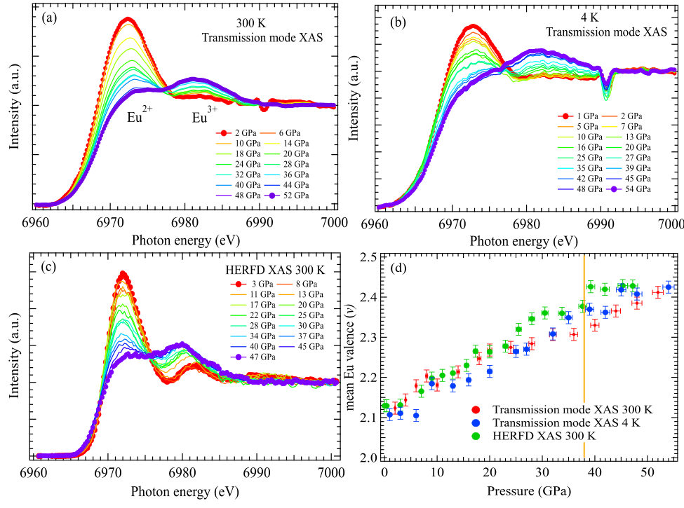
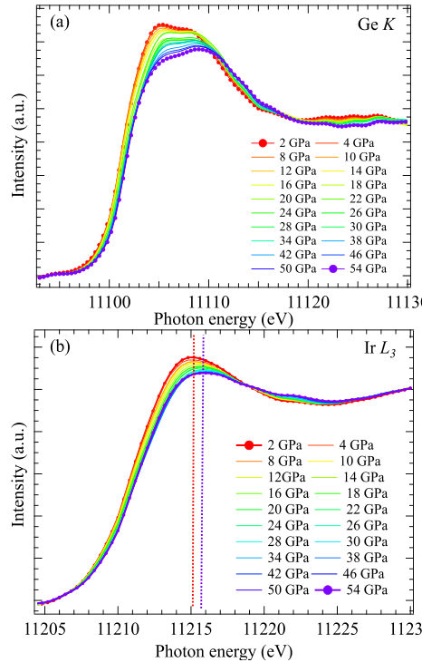
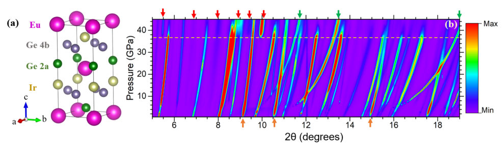
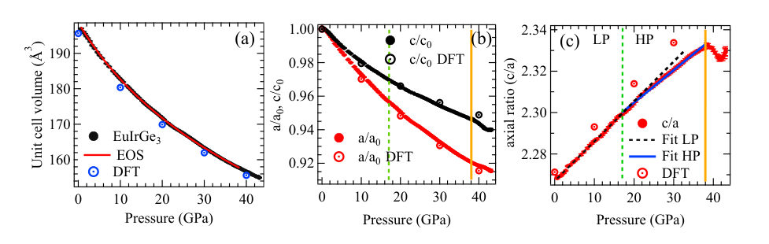
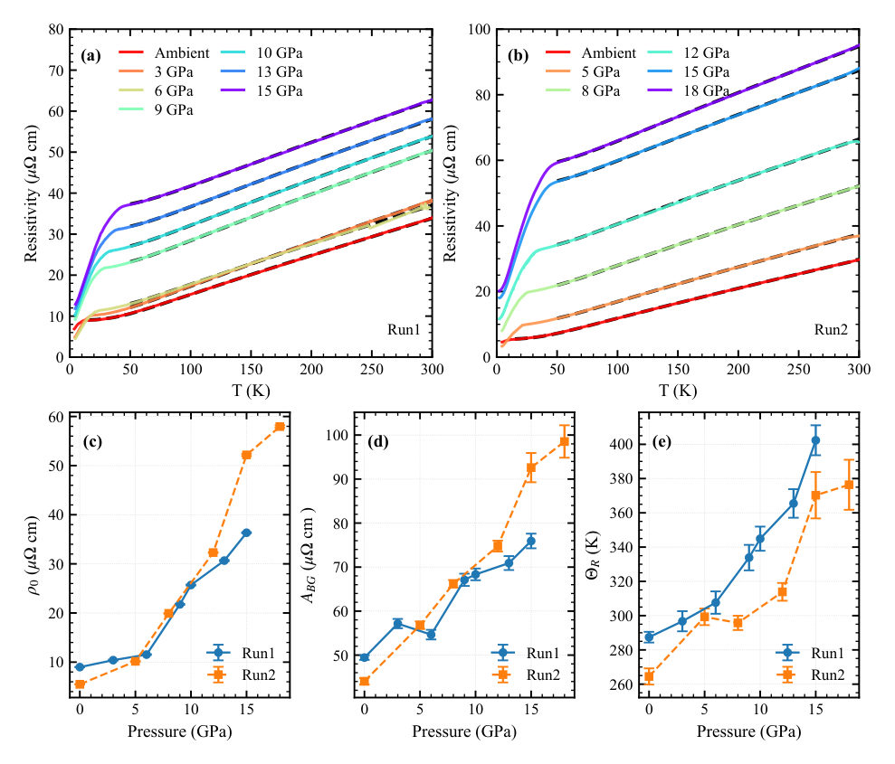
Summary. This work comprehensively examines how high pressure alters the electronic structure and crystal lattice of the antiferromagnet EuIrGe3. By combining XAS, XRD, and resistivity measurements with DFT calculations, the authors show that pressure drives a valence change in Eu and induces a structural phase transition. These results highlight the critical role of transition metal d-electron hybridization in governing the material's response to extreme conditions.
Why it may be interesting. The strong dependence of electronic properties (valence changes, hybridization) on external pressure, particularly in systems involving localized f-electrons (Eu) coupled to itinerant d-electrons (Ir), is highly relevant to understanding pressure-induced quantum phase transitions in correlated materials.
Main problem. The study investigates the pressure-induced electronic and structural evolution of the noncentrosymmetric antiferromagnet EuIrGe3.
Main result. The material exhibits a continuous increase in the mean Eu valence and undergoes a structural phase transition above 38 GPa, demonstrating a pressure response distinct from related compounds.
Method. The research combines experimental techniques like X-ray Absorption Spectroscopy (XAS), synchrotron X-ray Diffraction (XRD), and electrical resistivity measurements with theoretical calculations using Density Functional Theory (DFT).
Model / system. The system is EuIrGe3, a member of the BaNiSn3-type EuTGe3 family, which is studied across a range of high pressures (up to 40 GPa). The electronic structure is analyzed by tracking the valence changes of Eu and the hybridization between transition metal d-electron states (Ir 5d, Ge 4p).
Key observables. Mean Eu valence, anisotropic lattice compression parameters ($a, c$), antiferromagnetic ordering temperatures ($T_N$), and the evolution of the Density of States (DOS) components.
Important parameters / regimes. Pressure (up to 40 GPa), temperature (4 K to 300 K), and the Hubbard interaction U for Eu (3.8 eV).
Assumptions / limitations. The analysis assumes the structural stability within the tetragonal I4mm phase up to the transition pressure, and DFT calculations utilize the PBEsol functional with DFT+U treatment for Eu 4f states.
Figures summary. Figures show pressure-dependent Eu L3-edge XAS spectra revealing valence changes, high-pressure XRD patterns indicating structural transitions, and DFT-calculated DOS evolving with increasing pressure.
Paper structure. The paper follows a structure of presenting multiple complementary measurements: XAS tracks valence changes; XRD maps structural changes and phase transitions; resistivity measures magnetic stability; and DFT provides the underlying electronic structure calculations to interpret the experimental findings.
We investigated the pressure-induced evolution of the electronic and crystal structure of the noncentrosymmetric BaNiSn3-type antiferromagnet EuIrGe3 using x-ray absorption spectroscopy, synchrotron x-ray diffraction complemented by density functional theory calculations, and electrical resistivity measurements. The Eu L3-edge spectra reveal a continuous increase in the mean Eu valence under compression, accompanied by modifications of the Ge and Ir electronic states. High- pressure x-ray diffraction shows anisotropic lattice compression in the tetragonal (I4mm) phase and provides evidence for a structural phase transition above 38 GPa. The experimentally deter- mined lattice and equation-of-state parameters are in good agreement with the DFT calculations. Electrical resistivity measurements reveal a monotonic increase in the antiferromagnetic ordering temperatures up to 18 GPa, indicating that the antiferromagnetic ground state remains robust despite the increasing contribution of the nonmagnetic Eu3+ configuration to the intermediate va- lence state. These results demonstrate that EuIrGe3 exhibits a pressure response distinct from EuCoGe3 and EuRhGe3, highlighting the important role of the transition metal d-electron states in the pressure-induced electronic and structural evolution of the EuT Ge3 family
Authors: Uthirakalyani G, Pritam Halder, David Elkouss
Type: theory · Category: quantum information and computing · PDF: https://arxiv.org/pdf/2609.20133v1
Analysis basis: full PDF text, analyzed in chunks
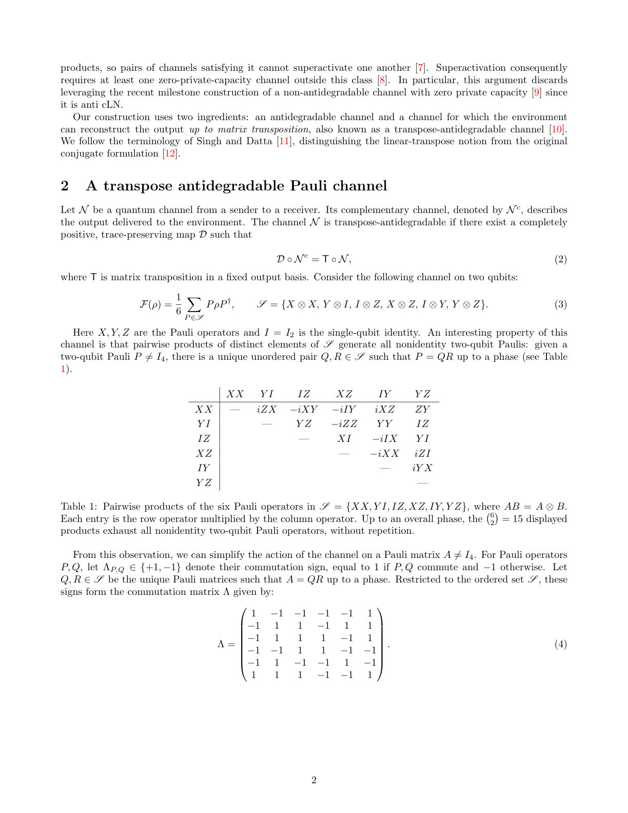
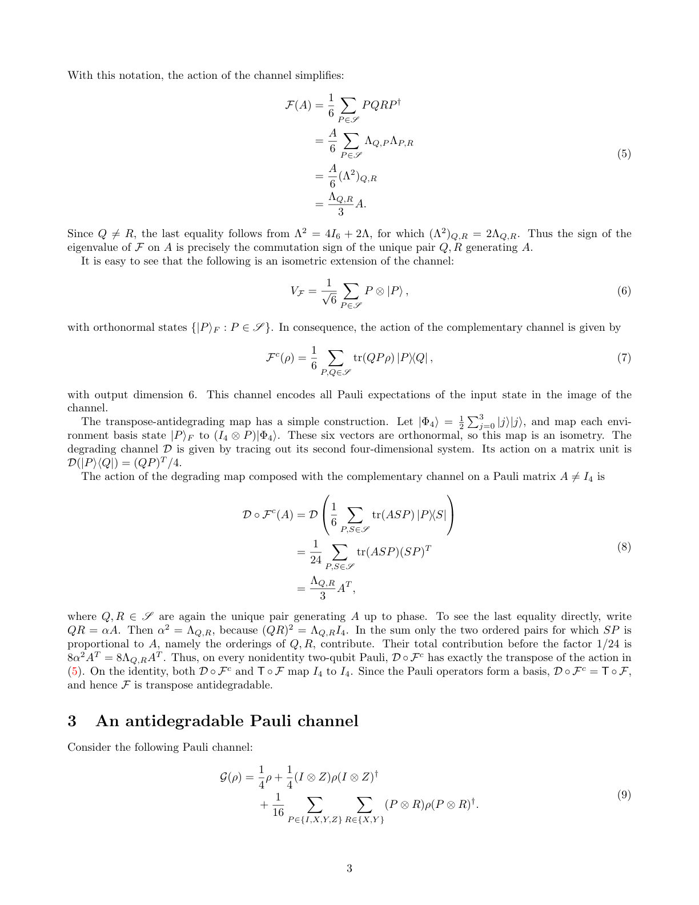
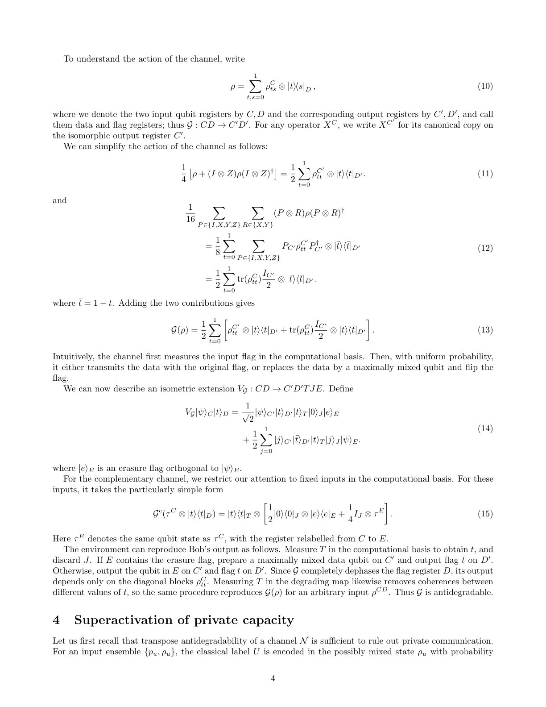
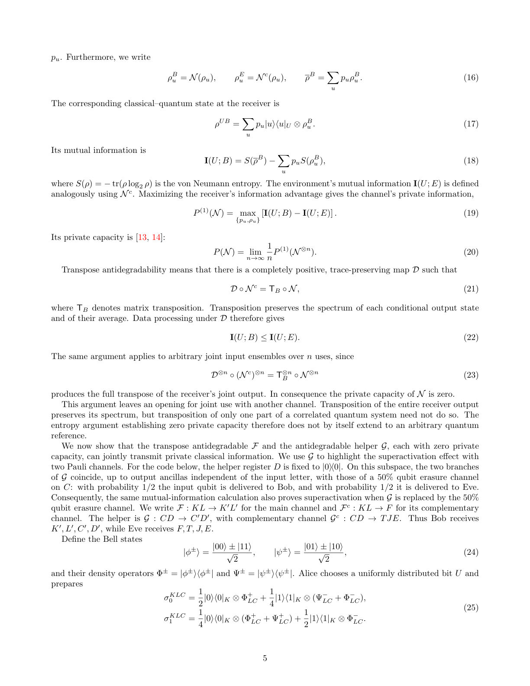
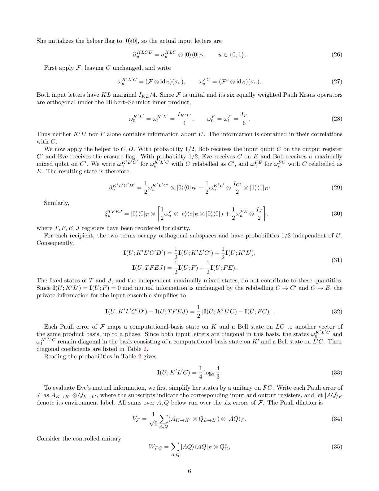
Summary. This theoretical paper explores quantum channel capacity, specifically focusing on private information. The core finding is that two individual quantum channels, each incapable of transmitting private information, can be combined to create a joint channel that can transmit private information. This phenomenon, called superactivation, highlights the complex, non-additive nature of quantum communication capabilities.
Why it may be interesting. This work provides deep insights into the structural properties of quantum channels (degradability, antidegradability) and how these properties dictate fundamental communication limits, which is crucial for understanding quantum communication protocols.
Main problem. The paper investigates the phenomenon of 'private-capacity superactivation,' demonstrating that combining two quantum channels, each having zero private classical capacity, can enable the transmission of private information.
Main result. The authors show that two specific Pauli two-qubit channels, $F$ and $G$, can jointly transmit private information, achieving a positive private capacity even though $P(F)=P(G)=0$.
Method. The analysis relies on defining private information using mutual information and analyzing the properties of quantum channels, specifically focusing on concepts like transpose-antidegradability and antidegradability.
Model / system. The study uses abstract quantum communication channels, specifically Pauli two-qubit channels and the 50% qubit erasure channel, analyzed using Pauli operators and tensor products.
Key observables. Private classical capacity ($P(N)$), Mutual Information ($I$), and Coherent Information ($I_c$).
Important parameters / regimes. The zero private capacity condition is linked to the channel being transpose-antidegradable, while superactivation requires the joint channel to violate this property.
Assumptions / limitations. The construction relies on the specific Pauli structure of the channels and the use of Bell states to build the activating binary code.
Figures summary. The notes reference tables detailing the action of Pauli operators on specific Pauli products and the resulting environment states after channel application.
Paper structure. The paper builds from defining channel capacities and the zero-capacity condition (related to transpose-antidegradability) to constructing a pair of channels $(F, G)$ that exhibit superactivation, and finally extending this to include the 50% erasure channel $(F, H)$.
A channel capacity quantifies the communication capability of a noisy physical process. In contrast to communication channels in the classical world, quantum theory makes this capability contextual. We show that two Pauli two-qubit channels, each with zero private classical capacity, can be used to transmit private information when used together. One is a two-qubit Pauli channel whose environment can reconstruct the receiver output up to matrix transposition; the other is an antidegradable channel. We obtain a similar result when the second channel is the 50% qubit erasure channel. A simple binary code built from rank-three mixtures of Bell states activates private communication. The main ingredient in our construction is a transpose-antidegradable channel that is not antidegradable.
Authors: Shiro Tamiya, Masato Koashi
Type: theory · Category: quantum information and computing · PDF: https://arxiv.org/pdf/2609.20708v1
Analysis basis: full PDF text, analyzed in chunks
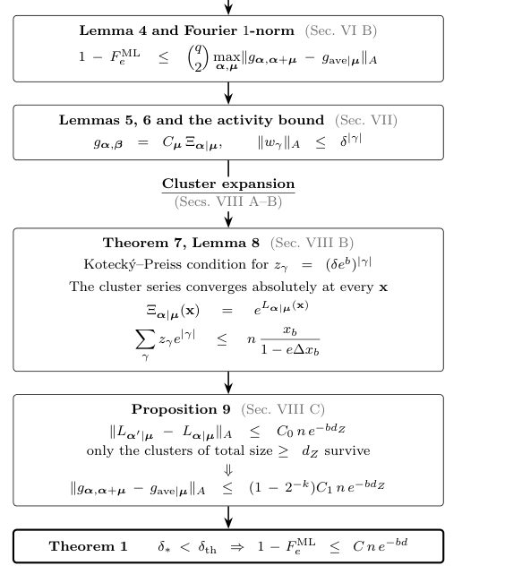
Summary. This paper establishes a theoretical proof for a positive error threshold in topological quantum codes when facing coherent errors, a significant advance over previous stochastic-only models. By combining Fourier analysis and polymer model techniques, the authors show that the logical error rate decays exponentially with code distance for Z-rotation errors. This work deepens the theoretical understanding of quantum error correction in realistic, non-stochastic noise environments.
Why it may be interesting. It provides a rigorous theoretical framework for understanding fault tolerance beyond the standard assumption of independent, stochastic errors, which is crucial for modeling real-world quantum hardware imperfections.
Main problem. The paper aims to rigorously prove the existence of a positive error threshold for topological quantum codes when subjected to coherent errors, extending previous results limited to stochastic error models.
Main result. It proves that a positive threshold exists for coherent Z-rotation errors for CSS QLDPC codes, showing that the entanglement infidelity is suppressed exponentially with code distance.
Method. The proof combines Fourier analysis to handle interference effects from coherent errors with the cluster expansion technique applied to abstract polymer models.
Model / system. The system analyzed is quantum error correction (QEC) applied to topological stabilizer codes, such as the surface code, defined on local lattices. The errors considered are coherent Z-rotation errors.
Key observables. Entanglement infidelity of the recovered logical information, and the existence of a positive error threshold.
Important parameters / regimes. Code distance ($d$), the magnitude of the coherent rotation angles ($ heta_j$), and the number of physical qubits ($n$).
Assumptions / limitations. The analysis assumes the syndrome measurement is performed in a noiseless way (code-capacity setting) and that the rotation angles are bounded by a constant independent of code size.
Paper structure. The paper builds from preliminaries (stabilizer codes, CSS codes, QLDPC codes, Fourier analysis) to derive the main theorem using advanced mathematical tools like Fourier analysis and the cluster expansion.
Threshold analyses of quantum error-correcting codes are well established for stochastic error models, in which errors occur randomly with given probabilities. However, errors in actual devices can also be coherent, such as unwanted $Z$ rotations due to imperfect control, which are not captured by stochastic error models. For the surface code, numerical studies have indicated threshold behavior even under coherent errors, but a rigorous proof of threshold existence is lacking. Here we prove that a positive threshold for coherent $Z$-rotation errors exists for quantum low-density parity-check codes with a bounded number of logical qubits, including the surface code and other topological codes. Specifically, we show that the maximum-likelihood Pauli recovery suppresses the entanglement infidelity exponentially in the code distance up to a prefactor linear in the number of physical qubits whenever the rotation angles lie below a constant that is independent of the code size. The proof combines Fourier analysis to retain the interference among the amplitudes of coherent errors with the cluster expansion of abstract polymer models. Our results expand the theoretical foundation of quantum error correction and offer a statistical-mechanical description of quantum error correction beyond stochastic errors.
Authors: Paul San Sebastian Sein, Theodor Iosif, Tilen G. Limbäck-Stokin, Kin Ian Lo, Yidong Liao
Type: both · Category: disordered systems and neural networks · PDF: https://arxiv.org/pdf/2609.19983v1
Analysis basis: full PDF text, analyzed in chunks
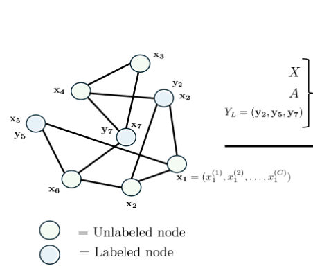
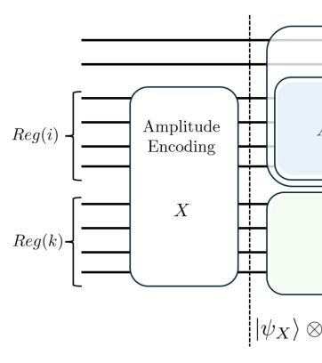
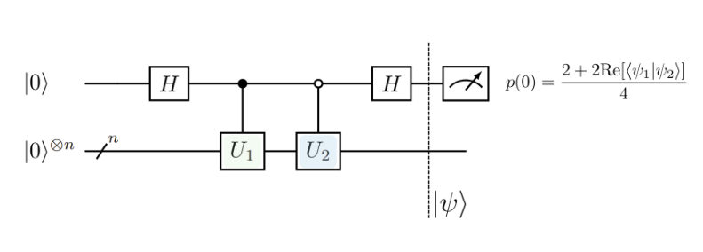
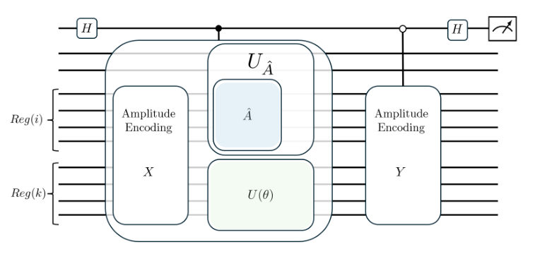
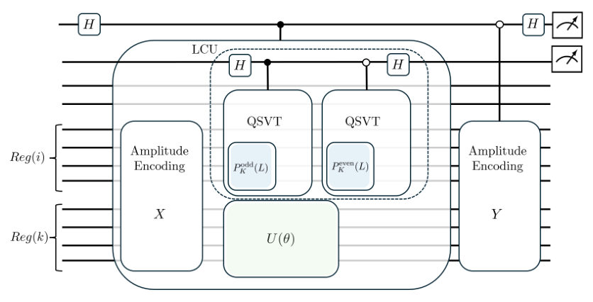
Summary. This paper explores using Quantum Graph Convolutional Networks (QGNNs) to overcome the memory and computational bottlenecks of classical GNNs on large graphs. By implementing and analyzing specific quantum architectures, the authors demonstrate that QGNNs can achieve comparable performance to classical methods with fewer parameters. The work provides a comprehensive analysis of the model's trainability and classical simulability regimes.
Why it may be interesting. The work directly bridges quantum machine learning with graph theory, providing a framework for simulating complex, structured data processing tasks using quantum primitives, which is highly relevant for understanding quantum algorithms applied to network science.
Main problem. The paper addresses the scalability limitations of classical Graph Neural Networks (GNNs) on large graphs and proposes quantum computing as a potential solution for graph learning.
Main result. Quantum Graph Convolutional Networks (QGNNs) achieve competitive predictive performance compared to classical baselines while potentially requiring fewer parameters.
Method. The authors implement and analyze two QGNN architectures (SGC and LGC) by encoding graph data into quantum states and approximating the convolution operation using quantum circuits.
Model / system. The system is graph-structured data $G=(V,E)$, modeled by node features $X$ and adjacency matrix $A$. The quantum model utilizes amplitude encoding and parameterized quantum circuits to simulate graph convolution.
Key observables. Predictive performance, trainability (cost gradient analysis), and parameter count compared to classical methods.
Important parameters / regimes. Graph size ($N$), feature dimension ($C$), and the rank ($r$) of the normalized adjacency matrix.
Assumptions / limitations. The analysis assumes an efficient Quantum Random Access Memory (QRAM) and relies on approximating the classical cross-entropy loss with a quantum overlap-based surrogate loss.
Figures summary. Figure 1 illustrates semi-supervised node classification; Figure 2 shows the quantum circuit for graph convolution; and Figure 3 depicts the Modified Hadamard Test used for loss estimation.
Paper structure. The paper first introduces the problem of GNN scalability, then details the quantum implementation of GCNs using quantum circuits and a surrogate loss function. It follows with detailed cost gradient analysis, classical simulability studies, and asymptotic derivations for graph invariants.
Graph Neural Networks (GNNs) achieve state-of-the-art performance on graph-structured data, but training and inference on large graphs are often bottlenecked by memory constraints and sparse linear-algebra workloads. Quantum computing offers an alternative set of primitives that may improve scalability for graph learning. Building on the quantum graph neural network (QGNN) framework of Liao \textit{et al.}, this work implements two representative architectures --- the Simplified Graph Convolution (SGC) and Linear Graph Convolution (LGC) models --- and evaluates them on open benchmark graph datasets and semi-supervised learning tasks using quantum simulation. We compare predictive performance and optimization behavior against classical baselines, showing that the quantum models achieve competitive performance with fewer parameters. Finally, we present a cost gradient analysis that identifies the tasks for which the models showcased are trainable. This is followed by a classical simulability study to find regimes in which the proposed circuits remain robust during training.
Authors: Xiangling Xu, Igor Klep, Marc-Olivier Renou
Type: theory · Category: quantum information and computing · PDF: https://arxiv.org/pdf/2609.19310v1
Analysis basis: full PDF text, analyzed in chunks
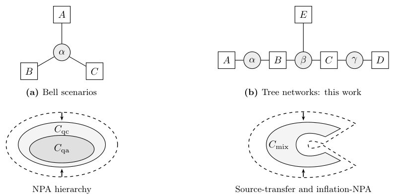
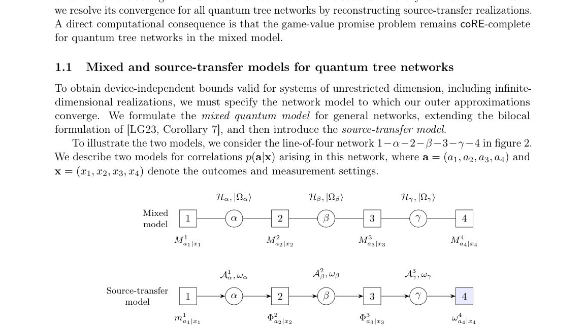
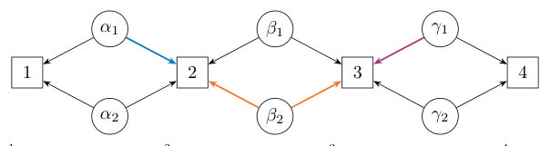
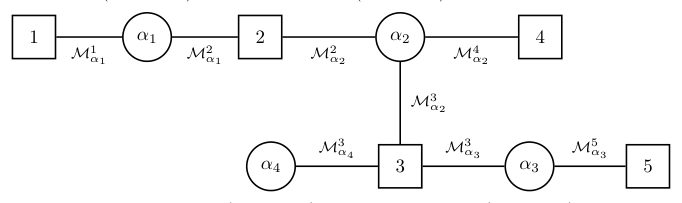
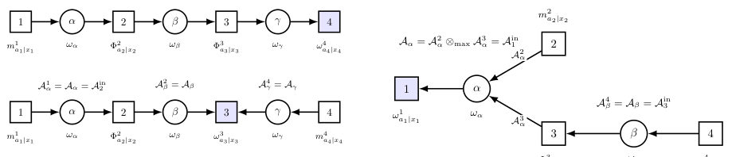
Summary. This paper develops a comprehensive mathematical framework to characterize correlations in quantum tree networks, resolving the difficulty of finding dimension-free bounds. It introduces the source-transfer model, proving its equivalence to the mixed quantum model, and establishes two complete SDP hierarchies for bounding these correlations. This work advances the theory of quantum correlations beyond simple tensor product assumptions.
Why it may be interesting. The rigorous mathematical characterization of quantum correlations in complex network structures provides fundamental tools for understanding resource theories in quantum information, applicable to quantum communication and computation protocols.
Main problem. The paper addresses the challenge of finding a systematic, dimension-free method to bound correlations achievable in general quantum networks, specifically quantum tree networks.
Main result. The authors introduce and prove the equivalence of the novel source-transfer model and the mixed quantum model for tree networks, establishing two complete outer SDP hierarchies for bounding these correlations.
Method. The methodology involves developing and proving the completeness of two specialized Semidefinite Programming (SDP) hierarchies—the source-transfer and inflation-NPA hierarchies—using advanced mathematical tools like noncommutative real algebraic geometry and completely positive maps.
Model / system. The focus is on quantum tree networks, which generalize the Bell scenario. The correlations are characterized by the Mixed Quantum Model ($ ext{C}_{ ext{mix}}$) and formalized using the Source-Transfer Model, which employs $C^*$-algebras and recursive completely positive maps.
Key observables. The game-value promise problem for quantum tree networks in the mixed model, and the convergence of the SDP hierarchies to the true correlation set.
Important parameters / regimes. The structure of the network (tree topology), the dimension of the local measurements, and the number of parties involved.
Assumptions / limitations. The primary assumption is that the correlation set is governed by the source-transfer model, which is shown to be equivalent to the mixed quantum model. A key limitation overcome is that simple measurement factorization is insufficient.
Figures summary. Figure 1 illustrates the hierarchy progression from Bell scenarios to quantum tree networks using the source-transfer and inflation-NPA hierarchies. Figure 2 compares the mathematical structure of the Mixed vs. Source-Transfer models for a line-of-four network.
Paper structure. The paper progresses by first defining the physical problem (bounding correlations in tree networks), then introducing the source-transfer model as the necessary formalism, proving its equivalence to the mixed model, and finally establishing the completeness of the corresponding SDP hierarchies.
Understanding the capabilities and limits of quantum systems is central to quantum information processing. This includes determining which correlations can arise in networks of quantum systems distributed by independent sources. Yet for general quantum networks, no systematic, dimension-free method is known to bound these correlations arbitrarily well. We resolve this problem for all quantum tree networks through a new source-transfer model, which we prove equivalent to a mixed quantum model. The mixed model places no restriction on dimension and reduces to the standard tensor-product model in finite dimensions; the source-transfer model instead describes these correlations through states on $C^*$-algebras and completely positive maps composed recursively along the tree. We prove the equivalence by reconstructing local measurements as Radon-Nikodym derivatives in the spatial tensor products prescribed by the network. Building on this characterization, we establish two convergent outer hierarchies of semidefinite programs (SDPs): a novel source-transfer hierarchy and the inflation-NPA hierarchy. For the source-transfer hierarchy, we extend noncommutative real algebraic geometry to multi-state polynomials with completely positive maps, prove a reconstruction theorem establishing its convergence, and give a sufficient stopping criterion for extracting finite-dimensional realizations. For the inflation-NPA hierarchy, we reconstruct source-transfer realizations from weak-operator limits of averages over source copies. Consequently, the game-value promise problem for quantum tree networks in the mixed model is $\mathsf{coRE}$-complete.
Authors: Matthias Troyer, Chetan Nayak, John Martinis
Type: theory · Category: quantum information and computing · PDF: https://arxiv.org/pdf/2609.20549v1
Analysis basis: full PDF text, analyzed in chunks
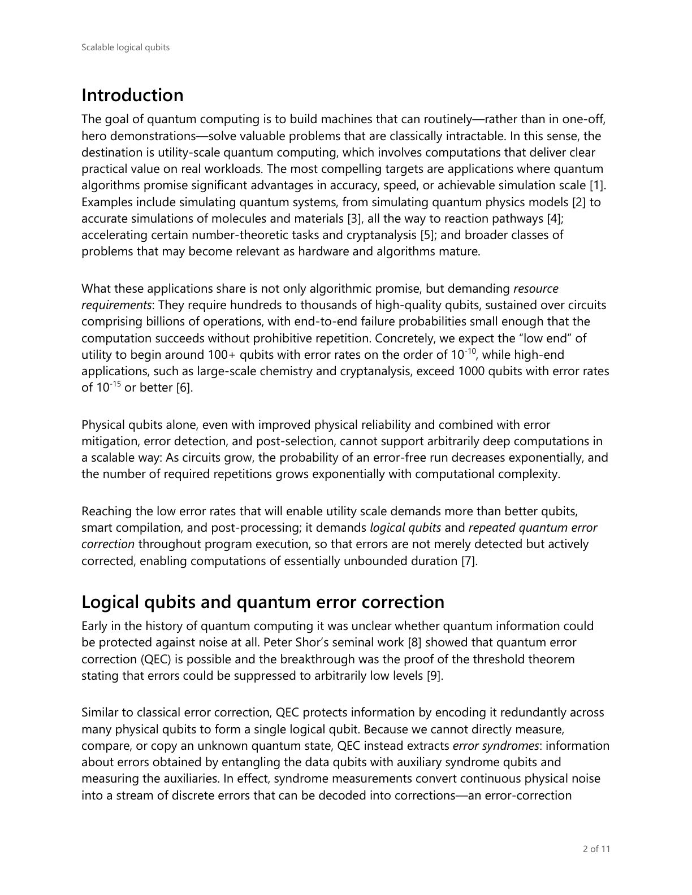
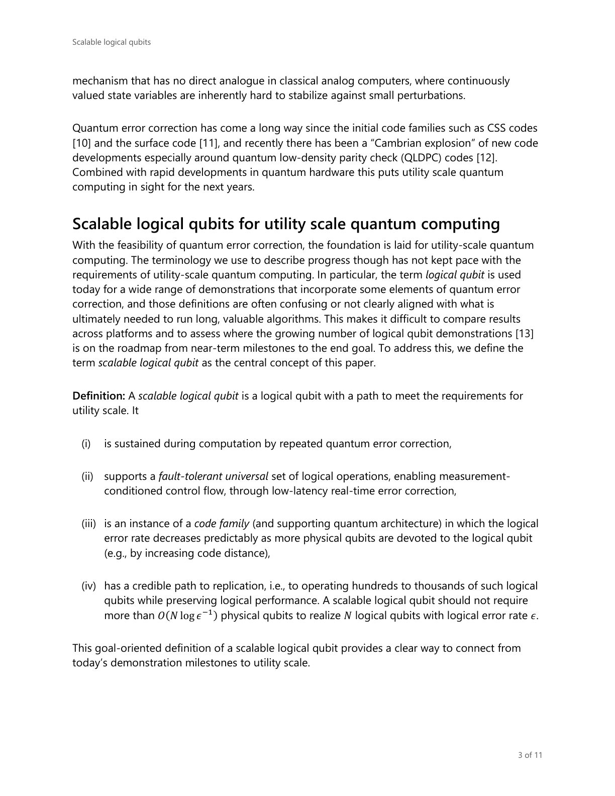
Summary. This paper establishes a rigorous framework for measuring progress toward utility-scale quantum computation by defining 'scalable logical qubits.' It characterizes progress across four coupled dimensions—reliability, scale, capability, and performance—and emphasizes that system cost, balancing error correction overhead against runtime, is the ultimate metric. This provides a necessary roadmap for researchers building fault-tolerant quantum processors.
Why it may be interesting. It provides a comprehensive, multi-dimensional framework for assessing the maturity of quantum hardware, which is crucial for theorists designing algorithms or analyzing resource requirements for future quantum simulations.
Main problem. Achieving utility-scale quantum computing requires error rates far below what physical qubits can support directly, necessitating robust error correction.
Main result. The authors introduce the concept of 'scalable logical qubits,' characterizing progress across four coupled dimensions: reliability, scale, capability, and performance.
Method. The paper defines a rigorous metric for progress by analyzing the trade-offs inherent in quantum error correction (QEC) schemes.
Model / system. The focus is on abstract quantum error correction codes (e.g., surface codes, LDPC codes) used to encode logical qubits redundantly across physical qubits.
Key observables. Logical error rates ($\epsilon$), number of logical qubits ($N$), logical cycle time, and physical-to-logical qubit overhead.
Important parameters / regimes. Target error rates ($\sim 10^{-12}$ to $10^{-15}$), required physical qubit count scaling ($O(N \log \epsilon^{-1})$), and decoding latency.
Assumptions / limitations. The analysis assumes the existence of low-latency, real-time decoding and feedback mechanisms necessary for fault-tolerant operation.
Paper structure. The paper establishes the necessity of logical qubits, defines the four characterization dimensions (Reliability, Scale, Capability, Performance), discusses the trade-offs between these dimensions, and concludes by framing progress assessment around overall system cost.
Utility-scale quantum computing will require executing long, complex algorithms with end-to-end error rates far below what physical qubits can support directly. Error-corrected logical qubits are needed to achieve this goal. To make the progress on logical qubits measurable and comparable we introduce the definition of scalable logical qubits: logical qubits preserved for long computations by repeated quantum error correction, capable of fault-tolerant universal operations with low-latency real-time decoding and feedback, and replicable to the hundreds or thousands, as required by applications. We characterize these scalable logical qubits along four coupled dimensions: reliability, scale, capability, and performance, and discuss trade-offs among these dimensions.
Authors: Lorenzo Ciardo, Iris Hebbeker, Gideo Joubert, Jana Kreiß, Antoine Mottet
Type: theory · Category: other · PDF: https://arxiv.org/pdf/2609.20678v1
Analysis basis: full PDF text, analyzed in chunks
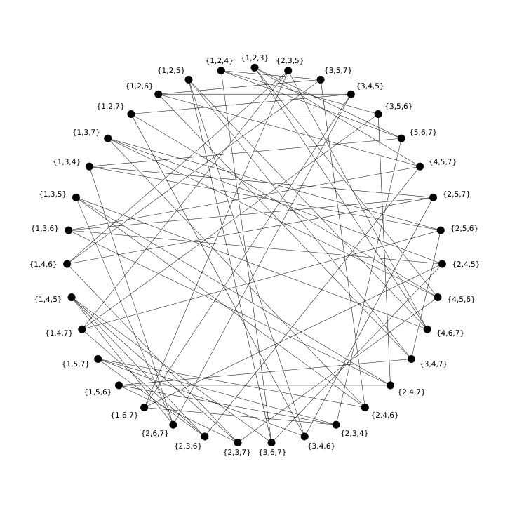
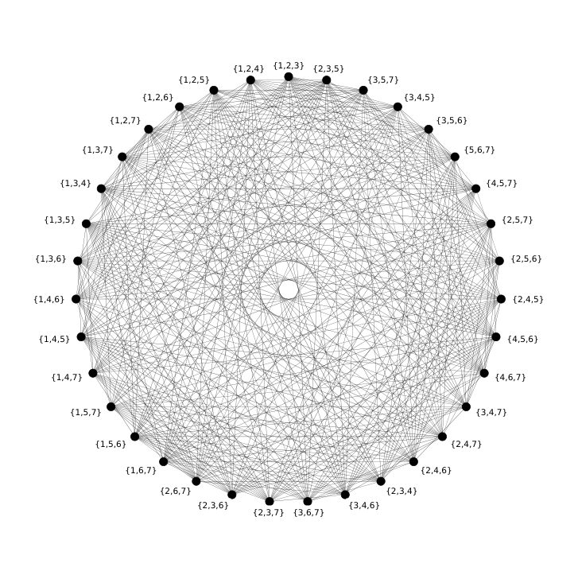
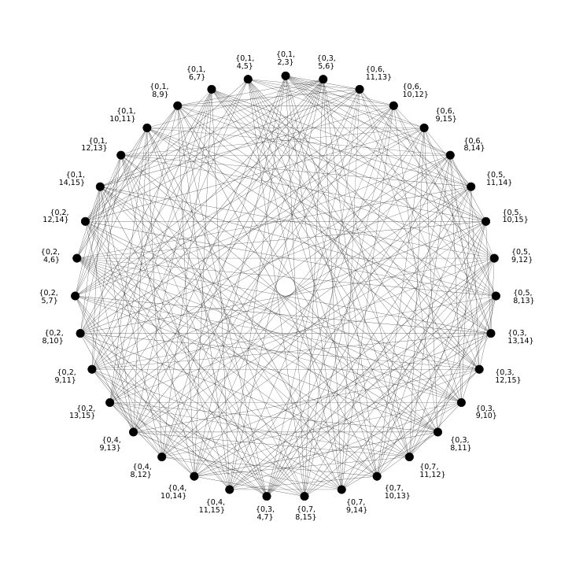
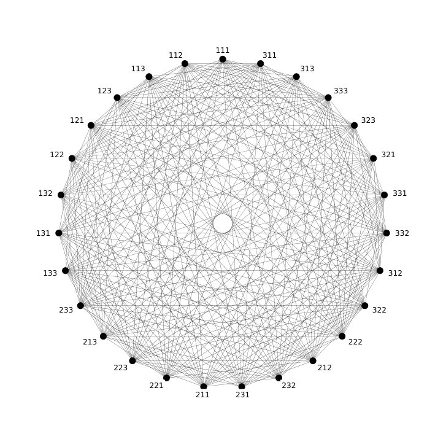
Summary. This theoretical paper proves that determining if a quantum homomorphism exists for certain structured graphs (like Kneser graphs) is computationally hard (RE-complete). It achieves this by developing a novel spectral method that links graph rigidity properties (derived from association schemes) to the non-contextuality of quantum operations. The work significantly advances the understanding of complexity in quantum graph theory.
Why it may be interesting. While highly mathematical, establishing computational hardness results for quantum problems provides theoretical boundaries for quantum computation models, which is relevant to understanding the limits of quantum information processing.
Main problem. The paper determines the computational complexity of the quantum graph homomorphism problem parameterized by specific families of graphs derived from association schemes.
Main result. It proves that this quantum homomorphism problem is RE-complete for graphs like Kneser graphs and complements of Johnson/Grassmann/Hamming graphs.
Method. The proof develops a spectral method to establish the non-contextuality of quantum polymorphisms, combining analysis of Roberson's bound with structural arguments from EKR theory.
Model / system. The model involves the quantum graph homomorphism problem defined over finite-dimensional tensor-product oracular settings, utilizing concepts from algebraic combinatorics like association schemes.
Key observables. Quantum homomorphism problem, Projective Packing Number (alpha_p(G)), Schrijver's theta (vartheta^-), and quantum polymorphisms.
Important parameters / regimes. The graph structure derived from symmetric association schemes (e.g., Kneser, Hamming).
Assumptions / limitations. The method relies on establishing a spectral condition that forces quantum polymorphisms to be non-contextual, linking graph rigidity to computational complexity.
Figures summary. Figure 4 illustrates the complement of the Hamming graph H(3, 3), showing its vertex and edge count.
Paper structure. The paper builds from defining the quantum homomorphism problem and related bounds ($\alpha_p, \vartheta^-$) to developing a spectral criterion for non-contextuality. It then applies this criterion to specific graph families (like those from association schemes) to prove RE-completeness.
We prove RE-completeness of the quantum homomorphism problem parameterised by families of graphs derived from the classic metric association schemes. These include Kneser graphs, $q$-Kneser graphs, and the complements of Johnson, Grassmann, and Hamming graphs. Our proof develops a spectral method for establishing non-contextuality of quantum polymorphisms. It combines an equality analysis of Roberson's bound on the projective packing number in terms of Schrijver's theta with a structural argument inspired by Erdős-Ko-Rado theory.
Authors: Fernanda Sulantay Vargas, Kimia Sinaeian, Amir Haji-Akbari
Type: theory · Category: statistical mechanics · PDF: https://arxiv.org/pdf/2609.19646v1
Analysis basis: full PDF text, analyzed in chunks
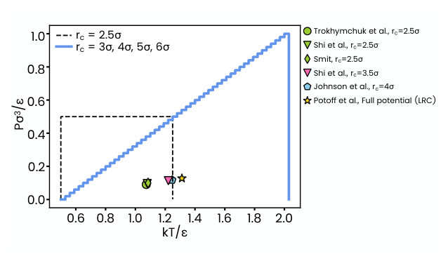
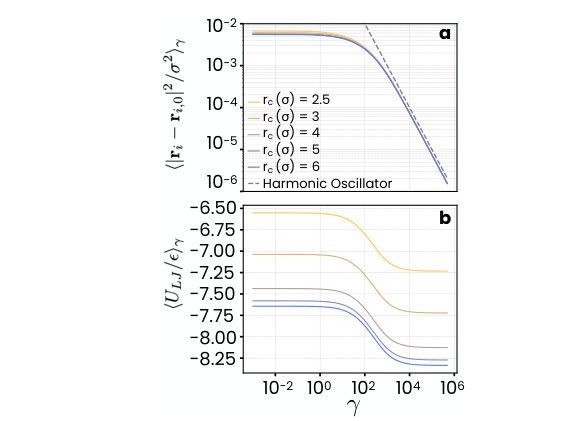
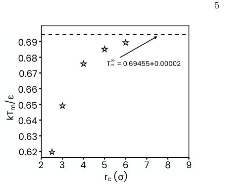
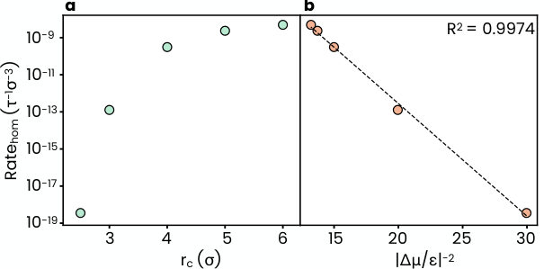
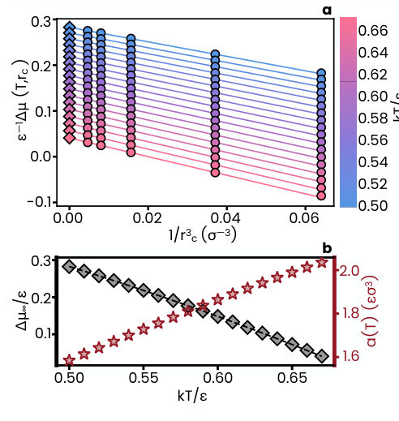
Summary. This work rigorously investigates the artificial sensitivity of nucleation rates to the cutoff radius used for long-range intermolecular interactions in the Lennard-Jones model. The study finds that the kinetic rate changes drastically with $r_c$, necessitating a systematic, theory-guided framework to extrapolate results to the full-potential limit. It emphasizes that the choice of truncation scheme must be treated as a fundamental convergence parameter in simulations of phase transitions.
Why it may be interesting. While focused on classical fluid dynamics, the rigorous treatment of convergence parameters ($r_c$) and the development of extrapolation frameworks are highly relevant to any simulation involving long-range forces, including those encountered in quantum many-body systems or complex quantum field theories.
Main problem. The paper quantifies how the calculated nucleation rates and melting thermodynamics are artificially sensitive to the method used to truncate long-range intermolecular interactions.
Main result. The nucleation rate exhibits extreme sensitivity, changing by about ten orders of magnitude when varying the cutoff radius, suggesting that the choice of cutoff is a critical, non-trivial parameter in simulations.
Method. The study combines Molecular Dynamics (MD) simulations, jumpy forward-flux sampling (jFFS), and free-energy calculations, utilizing Classical Nucleation Theory (CNT) to analyze the cutoff dependence.
Model / system. The benchmark system is the Lennard-Jones (LJ) fluid undergoing homogeneous crystal nucleation into an Fcc structure. The potential is truncated at a cutoff radius $r_c$, leading to the need for careful long-range corrections.
Key observables. Melting temperature ($T_m$), homogeneous crystal nucleation rate ($R_{hom}$), and the chemical potential difference between liquid and crystalline phases.
Important parameters / regimes. The cutoff radius ($r_c$) is the primary variable, tested in the range $2.5\sigma \le r_c \le 6\sigma$. The simulation is run at $kT/\epsilon = 0.5$.
Assumptions / limitations. The authors assume that the kinetic sensitivity stems primarily from cutoff-induced changes in the chemical potential difference ($\Delta\mu$) between the liquid and crystal phases, and they develop a framework to extrapolate finite-cutoff rates.
Figures summary. Figures illustrate reversible paths in the p-T plane for thermodynamic integration, and show the cutoff dependence of the melting temperature and nucleation rate.
Paper structure. The paper establishes the problem of long-range interaction truncation, applies MD/jFFS to the LJ system to calculate thermodynamics and kinetics across various $r_c$, derives the kinetic sensitivity from $\Delta\mu$, and proposes a CNT-based framework for extrapolation and optimal cutoff selection.
Nucleation rates are exponentially sensitive to the thermodynamic driving force and can therefore depend strongly on the treatment of long-range intermolecular interactions. Here, using the Lennard--Jones (LJ) system as a benchmark, we combine molecular dynamics (MD) simulations, jumpy forward-flux sampling (jFFS), and free-energy calculations to quantify the effect of potential truncation on melting thermodynamics, homogeneous crystal nucleation kinetics, and computational cost. Within the cutoff-radius range $2.5σ\le r_c\le 6σ$, the melting temperature at zero pressure varies by approximately 11%, while the nucleation rate changes by approximately ten orders of magnitude. By invoking classical nucleation theory (CNT), we show that this pronounced kinetic sensitivity originates primarily from cutoff-induced changes in the chemical potential difference between the liquid and crystalline phases. Building on this observation, we develop a CNT-based framework for extrapolating finite-cutoff rates to the full-potential limit and for estimating the expected rate deviations at other cutoff radii and temperatures. These findings also provide a systematic basis for cutoff selection: the optimal cutoff should minimize computational cost while keeping the deviation from the full-potential rate within acceptable bounds. At $kT/ε=0.5$, $r_c=4σ$ provides a reasonable compromise according to these criteria. We further demonstrate that conventional homogeneous tail corrections do not offer a reliable alternative, as they cannot consistently account for the liquid, crystalline, and interfacial environments present during nucleation. Our findings highlight the need to specify and validate the truncation scheme as an integral component of force-field development in simulations of nucleation and other interfacial phase transitions within inhomogeneous environments.
Authors: Kuan-Cheng Chen, Xiaotian Xu, Hiromichi Matsuyama, Wei-Hao Huang, Haomu Yuan, Yu Yamashiro
Type: both · Category: quantum information and computing · PDF: https://arxiv.org/pdf/2609.19392v1
Analysis basis: full PDF text, analyzed in chunks
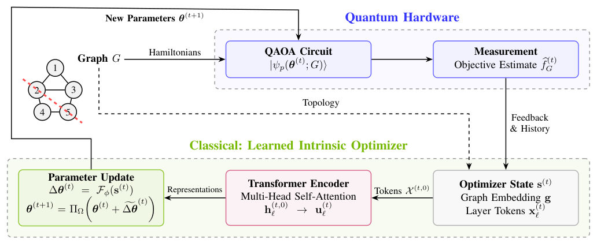
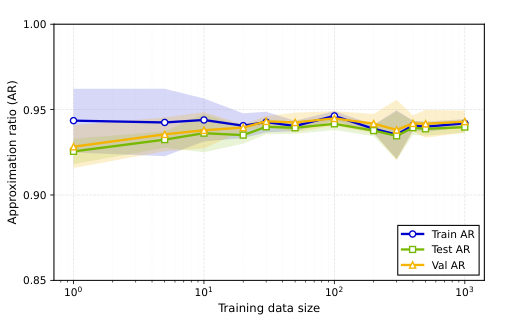
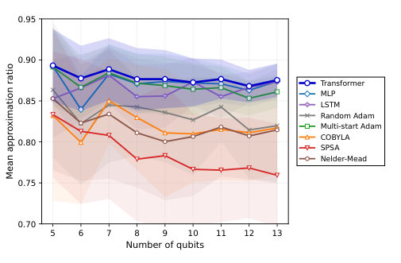
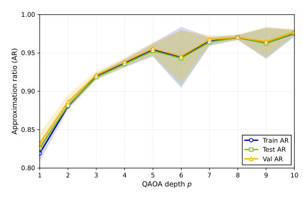
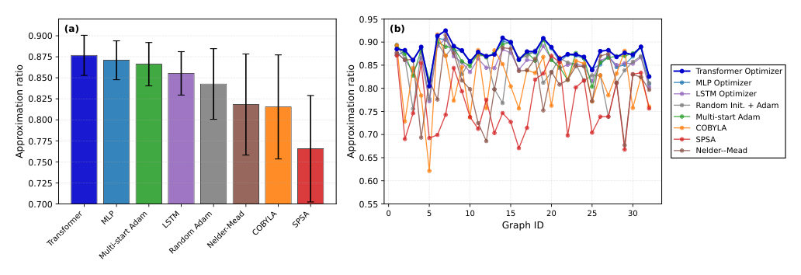
Summary. This paper introduces a novel Transformer-based intrinsic optimizer to overcome the limitations of classical optimization within the QAOA framework for quantum computing. By learning the parameter updates directly from the optimization history, the method transforms the difficult outer-loop optimization into a structured, learned policy. This significantly enhances the performance and transferability of QAOA for solving hard combinatorial problems like MaxCut.
Why it may be interesting. This work bridges quantum algorithms with advanced machine learning techniques, providing a concrete, data-driven method to improve the practical utility of variational quantum algorithms for optimization problems.
Main problem. The classical optimization loop required for training the Quantum Approximate Optimization Algorithm (QAOA) is nonconvex, sensitive to initialization, and computationally expensive.
Main result. A Transformer-based intrinsic optimization framework successfully learns the parameter updates, significantly outperforming conventional and learned baselines across various MaxCut benchmarks.
Method. The authors embed the optimizer directly into the hybrid loop, using a Transformer to process the problem structure, current parameters, and optimization history to predict the next parameter update as an amortized learned policy.
Model / system. The work focuses on QAOA, a variational quantum algorithm used for combinatorial optimization, specifically applied to the MaxCut problem on graph instances. The optimization involves finding parameters $ heta$ that maximize the expectation value of the cost Hamiltonian.
Key observables. Approximation Ratio (AR) and Mean Energy are the primary metrics used to quantify the quality of the optimized solution.
Important parameters / regimes. QAOA depth ($p$), graph size ($n$), and the dimensions of the Transformer model ($d, L$) are varied to test scalability and robustness.
Assumptions / limitations. The performance gain is attributed to the structured, learned update mechanism provided by the Transformer, rather than simply increasing the circuit depth or using better classical optimizers.
Figures summary. Figures demonstrate that the Transformer optimizer achieves superior AR compared to baselines across varying QAOA depths and graph sizes, and that the performance gain is substantial compared to a zero-update control.
Paper structure. The paper first establishes the limitations of standard QAOA optimization. It then details the Transformer architecture, including state tokenization and the prediction head. The core of the work involves formulating the meta-training objective and benchmarking the full system against multiple classical and learned optimizers.
The Quantum Approximate Optimization Algorithm (QAOA) is a leading variational framework for combinatorial optimization on noisy intermediate-scale quantum hardware, but its practical performance depends strongly on the classical optimizer used to train its variational parameters. This outer-loop optimization is often nonconvex, initialization-sensitive, and costly when repeated across large families of related problem instances. In this work, we propose a Transformer-based intrinsic optimization framework for QAOA, in which the optimizer itself is learned and embedded directly into the hybrid quantum-classical loop. The proposed graph-conditioned Transformer processes problem structure, current QAOA parameters, measurement feedback, and recent optimization history to predict the next variational-parameter update, thereby reformulating instance-wise classical optimization as an amortized learned policy. We develop a mathematical formulation of this intrinsic-optimization perspective and evaluate the method on QAOA-based MaxCut benchmarks across multiple problem settings, with comparisons against representative classical and learned optimization baselines. The results demonstrate that Transformer-based intrinsic optimization can provide a structured and transferable mechanism for improving the classical component of hybrid quantum optimization algorithms.
Authors: Karolina Górnicka, Sudip Malick, Joanna Bławat, Michał Modrzejewski, Hanna Świątek, Michał J. Winiarski, Federico Mazzola, Ivana Vobornik, Chiara Bigi, Jacob Cook, Brenden R. Ortiz, Andrew F. May, Andrzej P. Kądzielawa, John Singleton, Bartlomiej Wiendlocha, Tomasz Klimczuk
Type: both · Category: strongly correlated electrons · PDF: https://arxiv.org/pdf/2609.20093v1
Analysis basis: full PDF text, analyzed in chunks
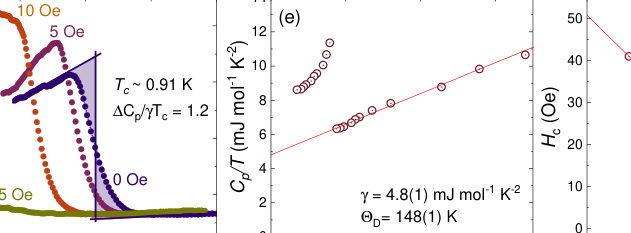
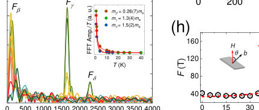
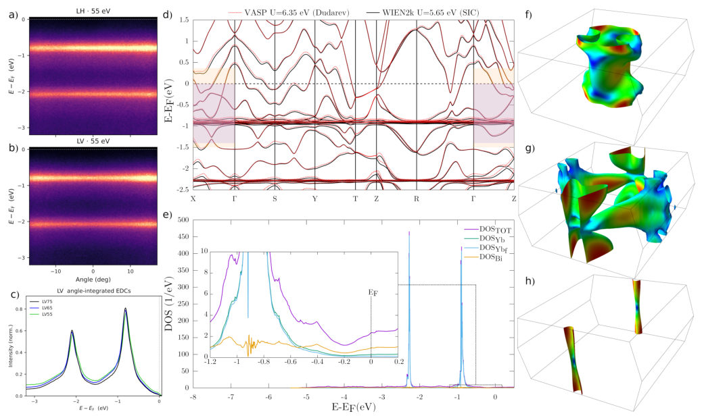
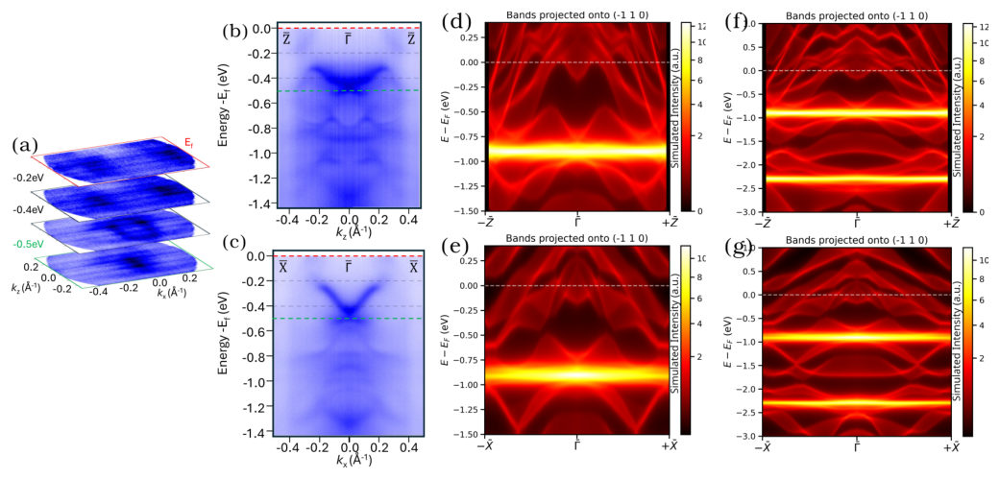
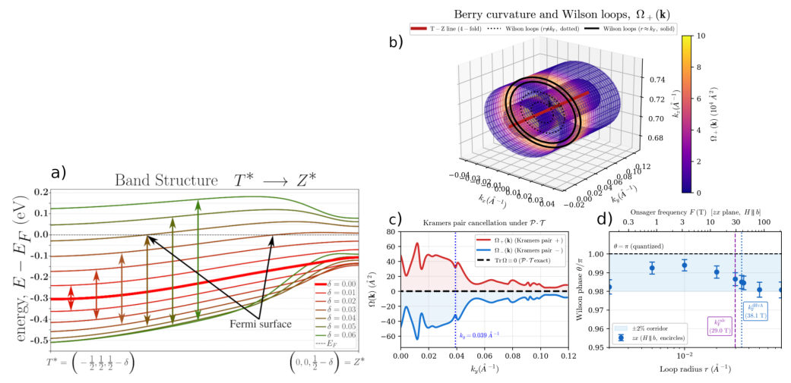
Summary. This paper reports on YbBi2, demonstrating that it is a rare material exhibiting both intrinsic Type-I superconductivity and signatures of nontrivial electronic topology. By combining quantum oscillation measurements, ARPES, and theoretical calculations, the authors establish YbBi2 as a crucial platform for understanding superconductivity in topologically rich electronic environments.
Why it may be interesting. The confluence of superconductivity, topology, and heavy fermion physics in YbBi2 provides a model system for studying how strong electronic correlations and topological order can interact to mediate superconductivity, which is a key area in condensed matter theory.
Main problem. The study investigates the challenging coexistence of intrinsic Type-I superconductivity and nontrivial electronic topology within a single, stoichiometric material.
Main result. The compound YbBi2 exhibits bulk Type-I superconductivity near 0.9 K, which coexists with strong evidence of a quasi-two-dimensional electronic structure and nontrivial band topology.
Method. The research combines multiple experimental techniques, including transport, magnetic susceptibility, quantum oscillations (dHvA/SdH), and ARPES, with theoretical calculations of electronic structure and topological invariants.
Model / system. The physical system is YbBi2, a layered rare-earth compound characterized by a nonsymmorphic crystal structure and a quasi-two-dimensional Fermi surface.
Key observables. Superconducting transition temperature (Tc ~ 0.9 K), light effective carrier mass (0.07 me), nonzero Berry phase (0.82 pi), and agreement between experimental quantum oscillation frequencies and theoretical band structure calculations.
Important parameters / regimes. Tc ~ 0.9 K; Cyclotron mass as low as 0.07 me; Berry phase $\approx 0.82 \pi$; $\Delta C/\gamma_n T_c = 1.2$.
Assumptions / limitations. The analysis assumes the applicability of models for topological invariants (like Wilson phases) and relies on fitting data to models like the McMillan equation for coupling strength.
Figures summary. Figures show superconducting properties (magnetization, resistivity, heat capacity) confirming Type-I behavior, and quantum oscillation data (dHvA, FFT spectra) detailing the Fermi surface structure and topological signatures.
Paper structure. The paper progresses by first establishing the superconducting state via multiple measurements, then characterizing the normal state electronic structure using quantum oscillations and ARPES, and finally synthesizing these results with theoretical calculations of topological invariants to confirm the unique platform.
Intrinsic superconductivity in stoichiometric materials with nontrivial electronic topology remains uncommon, limiting opportunities to investigate how these two phenomena coexist within a single electronic system. Here, we report bulk type-I superconductivity below $T_c$ $\sim$ 0.9~K in YbBi$_2$, a layered rare-earth compound with a nonsymmorphic crystal structure and a quasi-two-dimensional Fermi surface. Thermodynamic and transport measurements establish the superconducting ground state, while quantum oscillations reveal exceptionally light carriers, with a cyclotron mass as low as 0.07 $m_e$, and a nonzero Berry phase of approximately 0.82 $π$. The latter closely matches the calculated value of the corresponding Wilson phase 0.99 $π$ for the corresponding orbit near a symmetry-protected band degeneracy. ARPES measurements show good agreement with key features of the calculated electronic structure, providing complementary experimental constraints on the normal-state band structure. The combination of intrinsic type-I superconductivity, light quasi-two-dimensional carriers, and signatures of nontrivial electronic topology identifies YbBi$_2$ as a distinct stoichiometric platform for investigating superconductivity in a topologically nontrivial electronic environment.
Authors: Lucia Malickova
Type: theory · Category: strongly correlated electrons · PDF: https://arxiv.org/pdf/2609.20439v1
Analysis basis: full PDF text, analyzed in chunks
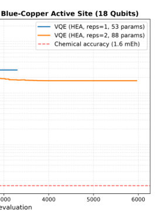
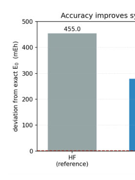
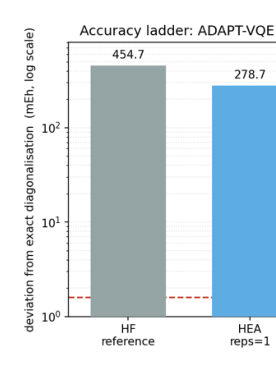
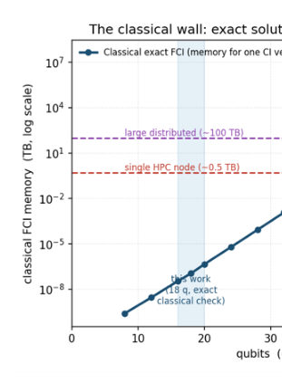
Summary. This paper validates a Variational Quantum Eigensolver (VQE) pipeline on a model of a copper enzyme active site, demonstrating that a problem-tailored ansatz significantly outperforms simpler methods. By achieving high accuracy on a manageable 18-qubit system, the authors establish a robust methodology necessary for tackling the full, classically intractable multi-copper enzyme cluster on future quantum hardware.
Why it may be interesting. This work directly tackles the limitations of current quantum algorithms for simulating chemically relevant, strongly correlated open-shell systems, providing a concrete, validated roadmap for quantum chemistry hardware.
Main problem. The paper addresses the challenge of simulating strongly correlated electronic structure in complex, open-shell transition metal active sites, which are classically intractable.
Main result. The problem-tailored ADAPT-VQE successfully validated a quantum computational pipeline, achieving a $>40 imes$ improvement in accuracy over simpler ansätze by removing over 99% of the correlation error.
Method. The Variational Quantum Eigensolver (VQE) algorithm was employed, utilizing a problem-tailored ansatz (ADAPT-VQE) to minimize the energy expectation value of the mapped Hamiltonian.
Model / system. The study focuses on the mononuclear T1 (Blue-Copper) active site of a laccase enzyme, modeled using a CAS(15e, 9o) active space and mapped to 18 qubits via the Jordan-Wigner transformation.
Key observables. Ground state energy ($E_0 = -2518.995 ext{ Eh}$), energy convergence plateaus, and the relative improvement ratio ($> 40 imes$) between ansatz types.
Important parameters / regimes. The system size is limited to 18 qubits for validation, while the ultimate target requires 50–70 qubits, exceeding classical FCI memory limits.
Assumptions / limitations. The primary assumption is that the dynamically constructed, physically-motivated ansatz (ADAPT-VQE) represents the correct algorithmic path, despite the residual few-mEh gap suggesting limitations in the single-reference excitation ansatz.
Figures summary. Figures illustrate the energy convergence of different ansätze (HEA vs. ADAPT-VQE) and demonstrate the exponential classical memory wall encountered when scaling to the full multi-copper cluster.
Paper structure. The paper first validates the VQE pipeline on the T1 site using an emulator, comparing HEA and ADAPT-VQE performance. It establishes the methodology's robustness before framing it as a necessary stepping stone for tackling the full, classically intractable multi-copper enzyme cluster.
Validating variational quantum eigensolver (VQE) pipelines on realistic chemical systems is a critical stepping stone toward tackling classically intractable molecules. In this work, we report emulator-based validation of the VQE workflow proposed for the copper active site, executed on the LRZ Eviden Qaptiva emulator. A problem-tailored ADAPT-VQE with a full singles-doubles-triples (S+D+T) pool removes over 99% of the correlation error, reaching a stable plateau at 4.03 mEh relative to exact diagonalisation (148 selected operators). This establishes a >40x improvement over the hardware-efficient ansatz (HEA). Finally, we frame these emulator results as a robust baseline for upcoming physical quantum hardware runs on Euro-Q-Exa.
Papers from cond-mat.mtrl-sci, mes-hall, other, soft, supr-con. These archives are de-prioritized — they appear at the end regardless of relevance score.
Authors: Xudong Zheng, Sameia Zaman, Kenan Zhang, Connor A Occhialini, Haowei Xu, Zhien Wang, Fangyuan Liu, Luiz Gustavo Pimenta Martins, Sejoon Lim, Tianyi Zhang, Tilo H. Yang, Jiangtao Wang, Yunyue Zhu, Zachariah Hennighausen, Sein Park, Steven Vitale, Kevin Tibbetts, Stephen Margiotta, Phillip Kim, Cong Su, Ju Li, Riccardo Comin, William D. Oliver, Joel Î-j. Wang, Jing Kong
Type: both · Category: strongly correlated electrons · PDF: https://arxiv.org/pdf/2609.19321v1
Analysis basis: full PDF text, analyzed in chunks
Topic relevance: 🔥 QC/QI experiment 4/5 · analog quantum simulation 2/5
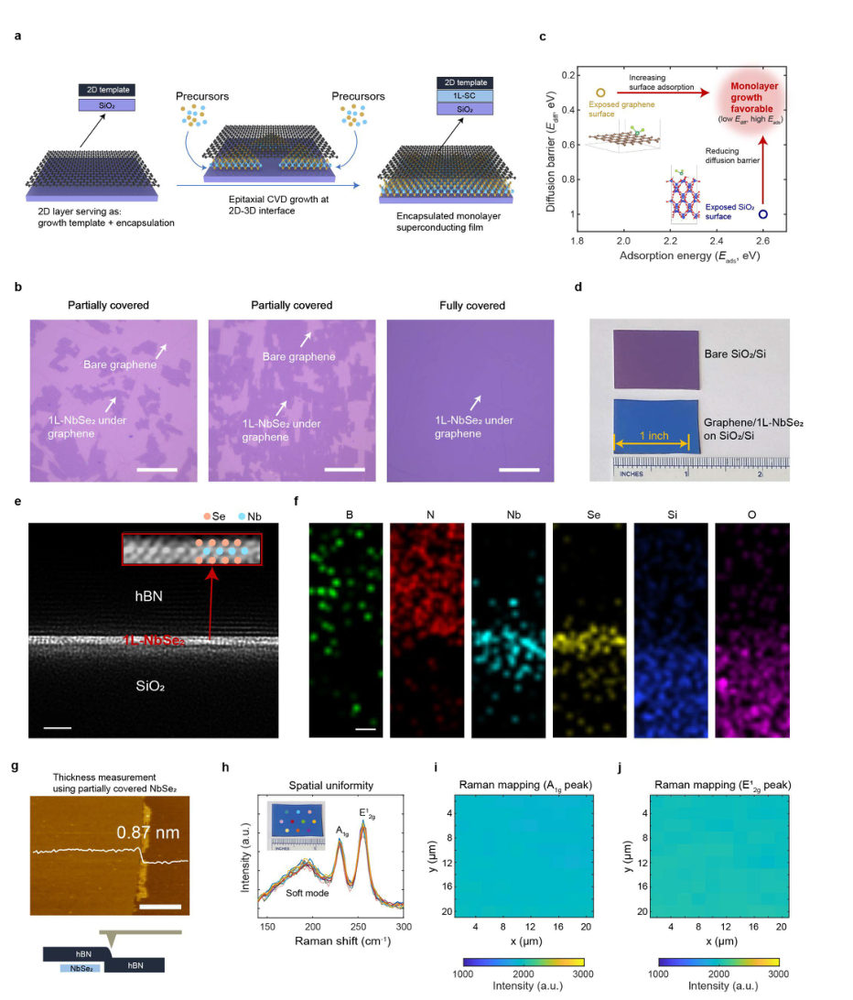
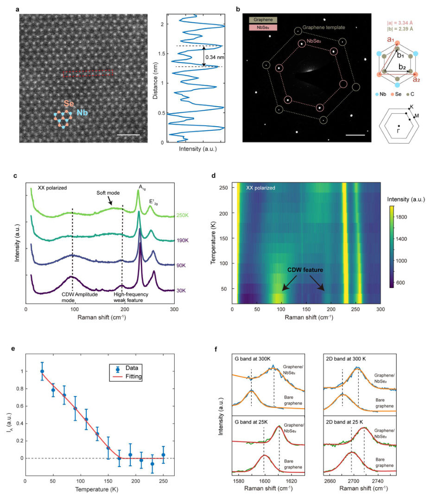
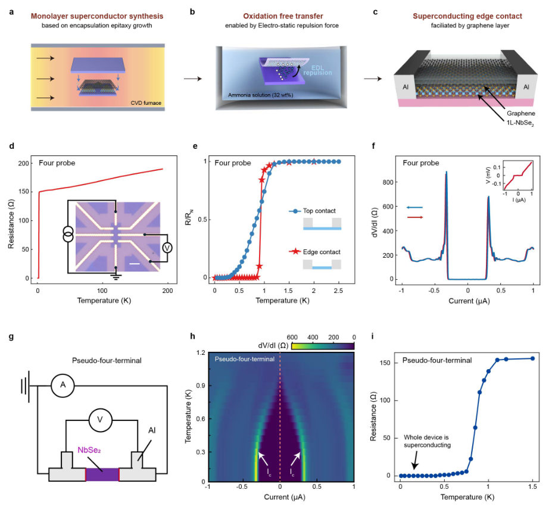
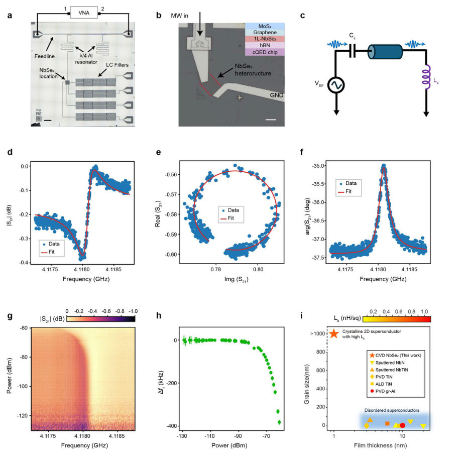
Summary. This paper reports an 'encapsulation epitaxy' technique to grow large-area, air-stable monolayer superconducting $ ext{NbSe}_2$ films. By using a 2D layer as both a template and a protective cover, they overcome the material's susceptibility to oxidation. This enables the fabrication of high-quality superconducting heterostructures suitable for next-generation quantum circuits.
Why it may be interesting. The work directly addresses material synthesis challenges for quantum hardware, linking fundamental condensed matter physics (superconductivity, CDW) to practical device engineering, which is highly relevant for quantum information science.
Main problem. The primary challenge is developing a scalable, air-stable method to synthesize large-area, monolayer superconducting films necessary for integrating into quantum circuits and qubits.
Main result. The authors introduce an 'encapsulation epitaxy' mechanism that successfully grows large-area, air-stable monolayer $ ext{NbSe}_2$ films, demonstrating robust superconductivity and suitability for wafer-scale quantum circuit fabrication.
Method. The method combines epitaxial growth techniques with a protective 2D encapsulation layer (graphene/hBN) on a 3D substrate, supported by DFT calculations to guide the growth mechanism.
Model / system. The physical system is the 2D superconductor $ ext{NbSe}_2$ grown epitaxially at the interface between a 2D encapsulating layer (e.g., graphene) and a 3D substrate ($ ext{SiO}_2$ or $ ext{Si}_3 ext{N}_4$). The process is governed by surface diffusion and adsorption energies.
Key observables. Superconducting transition temperature ($T_c \approx 1 ext{ K}$), Charge Density Wave temperature ($T_{ ext{CDW}} \approx 177 ext{ K}$), kinetic inductance ($L_K \approx 0.7 ext{ nH}/\square$), and resistance measurements showing zero resistance.
Important parameters / regimes. Diffusion barrier ($E_{ ext{diff}}$) and adsorption energy ($E_{ ext{ads}}$) are key kinetic parameters derived from DFT modeling.
Assumptions / limitations. The method assumes the 2D layer acts effectively as both a template for epitaxial growth and a protective barrier against ambient oxidation.
Figures summary. Figures illustrate the encapsulation epitaxy process, structural characterization (STEM, SAED) confirming interface growth, and electrical measurements demonstrating superconducting edge contacts and air stability.
Paper structure. The paper progresses from identifying the synthesis challenge to proposing the encapsulation epitaxy method, validating the growth mechanism using DFT, characterizing the resulting material quality (superconductivity, CDW), and finally demonstrating device integration and air stability.
Two-dimensional (2D) superconductors are an emerging platform for strongly correlated physics and quantum information science. Their reduced dimensionality, atomically flat interfaces, and high crystallinity are attractive for realizing compact lumped-element devices in superconducting circuits. However, synthesizing large-area, monolayer 2D superconductors remains challenging because of their susceptibility to oxidation. Here, we report an "encapsulation epitaxy" mechanism that enables the growth of large-area, air-stable, monolayer superconducting NbSe2 films and explore their use in superconducting quantum circuits. A 2D encapsulation layer, such as graphene or hexagonal boron nitride (hBN), pre-deposited on a 3D substrate (e.g., SiO2 or Si3N4), serves both as a template for epitaxial growth of monolayer NbSe2 (1L-NbSe2) underneath it and as a protective cover. This approach produces uniform, large-area (>1-inch) 1L-NbSe2 with greatly enhanced ambient stability, enabling device fabrication in air. The resulting 1L-graphene/NbSe2 heterostructures exhibit robust superconductivity (Tc ~ 1 K) and enhanced charge density wave order (TCDW ~ 177 K), indicative of high material quality. We further integrate 1L-NbSe2 into superconducting circuits using oxidation-free transfer and superconducting edge-contact techniques. The 1L-NbSe2 exhibits a measured kinetic inductance LK ~ 0.7 nH/square, making it suitable for quantum circuits requiring high-kinetic-inductance elements. Encapsulation epitaxy thus provides a route to air-stable 2D superconductors and van der Waals heterostructures, with potential for wafer-scale, monolithic fabrication of superconducting quantum circuitry.
Authors: Prasad Muragesh, Manav Murali, Venkatesha Modur Ramachandra, Madhu Thalakulam
Type: both · Category: other · PDF: https://arxiv.org/pdf/2609.20426v1
Analysis basis: full PDF text, analyzed in chunks
Topic relevance: QC/QI experiment 3/5 · Keldysh / 2PI / non-Gaussian methods 1/5 · analog quantum simulation 1/5 · methods for driven-dissipative 1/5 · quantum measurements 1/5
Summary. This work demonstrates a novel transistor platform using MoS2 on SrTiO3 with coplanar lateral gates. The key innovation is leveraging the temperature-dependent, high permittivity of STO, which enhances gate coupling, leading to excellent electrostatic control. This makes the architecture promising for both low-power classical electronics and cryogenic quantum devices.
Why it may be interesting. The strong, tunable gate coupling mechanism derived from the quantum paraelectric nature of STO provides a novel, highly controllable electrostatic environment for 2D materials, which is crucial for realizing scalable quantum devices.
Main problem. To develop a unified, low-power platform for both classical and cryogenic quantum electronic devices using atomically thin MoS2 transistors.
Main result. The coplanar lateral-gating architecture on SrTiO3 exhibits enhanced gate coupling, leading to superior electrostatic control and a temperature-dependent threshold voltage shift beneficial for quantum applications.
Method. The study combines experimental characterization (I-V measurements down to 10 K) with advanced numerical simulations solving the Poisson equation to model charge transport.
Model / system. The system is a MoS2 field-effect transistor fabricated on a single-crystal SrTiO3 substrate, utilizing coplanar lateral gates and a back gate. The simulation models the temperature-dependent permittivity of STO and self-consistently solves for the electrostatic potential and charge density.
Key observables. Source-drain current (I-V characteristics), subthreshold swing (SS), threshold voltage (Vth), and the temperature dependence of gate coupling.
Important parameters / regimes. Cryogenic temperatures (down to 10 K), high permittivity of SrTiO3, and the gate coupling strength modulated by temperature.
Assumptions / limitations. The STO substrate remains crystalline and defect-free, and the simulation relies on solving the nonlinear Poisson equation with temperature-dependent dielectric constants.
Figures summary. Figures show device schematics, I-V characteristics demonstrating n-type behavior and gate modulation, and temperature dependence plots illustrating the change in Vth and SS as temperature decreases.
Paper structure. The paper establishes the physical platform, presents experimental characterization showing superior performance over SiO2, and uses simulations to model the temperature-dependent electrostatic potential enhancement provided by the STO substrate.
Atomically thin transition-metal dichalcogenides, such as MoS2, offer a promising route to surpass the scaling limits of silicon owing to their excellent electrostatic control and resilience to short-channel effects. Realizing this potential depends critically on gate-stack engineering, where strong gate coupling must be achieved without compromising the pristine two-dimensional interface. Here, we demonstrate a coplanar lateral-gating architecture for MoS2 field-effect transistors fabricated directly on single-crystal SrTiO3. The exceptionally high permittivity of SrTiO3 enhances gate-channel coupling. The coplanar geometry eliminates the need for a separate gate insulator, reducing interface disorder. Owing to the quantum paraelectric nature, the SrTiO3 dielectric constant increases upon cooling, enhancing the gate coupling, leading to a decrease in threshold voltage and subthreshold swing an effect that contrasts with conventional FET architectures. The dielectric-free MoS2 surface, combined with enhanced electrostatic control, makes this architecture a promising platform for low-power two-dimensional electronics and cryogenic quantum devices.
Authors: Che-Pin Hsu, Alina Mreńca-Kolasińska, Aitor Garcia-Ruiz, Szu-Chao Chen, Denis Kochan, Klaus Richter, Ming-Hao Liu
Type: theory · Category: other · PDF: https://arxiv.org/pdf/2609.19627v1
Analysis basis: full PDF text, analyzed in chunks
Topic relevance: interference shaping light 3/5 · analog quantum simulation 1/5
Summary. This work theoretically models quantum transport in a graphene junction structured as Normal-Superlattice-Normal. By simulating the system under magnetic fields, the authors predict the observation of three distinct quantum phenomena: Fabry-Pérot interference, the Hofstadter butterfly, and a unique 'supersnake state.' This demonstrates the versatility of gate-defined superlattices as platforms for controlling quantum electronic behavior.
Why it may be interesting. The ability to engineer and observe multiple, distinct quantum phenomena (FP, Hofstadter, supersnake) within a single, gate-tunable device architecture is highly relevant for understanding controllable quantum transport in 2D materials.
Main problem. The study investigates quantum transport phenomena across a gate-defined graphene superlattice junction (NGr-SGr-NGr) under varying magnetic fields.
Main result. The junction was shown to host multiple distinct transport regimes, including Fabry-Pérot interference, the Hofstadter butterfly spectrum, and a novel 'supersnake state' in the conductance map.
Method. Quantum transport simulations were performed using a tight-binding model, employing real-space Green's function methods for both periodic and open boundary conditions.
Model / system. The system is a graphene superlattice junction formed by confining a 2D superlattice graphene (SGr) region between normal graphene (NGr) regions. The physics is modeled using a scalable tight-binding Hamiltonian incorporating gate-defined potentials.
Key observables. Conductance ($G$), Fabry-Pérot interference fringes, Hofstadter butterfly spectrum, and the signature of the supersnake state.
Important parameters / regimes. Magnetic field strength (up to 3 T), carrier density ($n_t$), and the superlattice period ($P$).
Assumptions / limitations. The simulations assume the clean limit, requiring the superlattice length to be much smaller than the mean free path ($\ell_{mfp}$), and the model neglects certain quantum corrections to carrier density.
Figures summary. Figures illustrate the schematic of the gate-controlled device (NGr-SGr-NGr) and the bottom-gate capacitance profile across the junction.
Paper structure. The paper develops the theoretical framework using a tight-binding Hamiltonian, applies quantum transport methods (Green's functions) to calculate conductance in different magnetic field regimes, and analyzes the resulting characteristic interference patterns and energy spectra.
Electrostatic modulation of graphene provides a tunable route to engineering miniband structures. We perform quantum transport simulations on a gate-defined graphene superlattice junction, formed by confining a two-dimensional superlattice graphene (SGr) region between two normal graphene (NGr) regions. In the low-field regime at low carrier densities, robust Fabry-Pérot interference fringes emerge even in the unipolar regime due to Fermi-velocity renormalization in the SGr region. At stronger magnetic fields but only up to 3 T, the conductance map clearly reveals the Hofstadter butterfly spectrum. At intermediate fields, our finite-width transport simulations reveal a new type of snake state, the supersnake state, composed of alternating anomalous cyclotron arcs on the SGr side and conventional semicircular arcs on the NGr side, forming a weaving trajectory along the junction. The resulting conductance oscillations agree well with geometrical conditions derived from semiclassical cyclotron orbits. Our results demonstrate that gate-defined NGr-SGr-NGr junctions provide a versatile platform hosting multiple transport regimes within a single device architecture and can be generalized to other types of superlattices not restricted to graphene.
Authors: A. A. Golubov, M. Yu. Kupriyanov
Type: theory · Category: other · PDF: https://arxiv.org/pdf/2609.19380v1
Analysis basis: full PDF text, analyzed in chunks
Topic relevance: Keldysh / 2PI / non-Gaussian methods 3/5
Summary. This work theoretically predicts that in superconducting junctions coupled to ferromagnets, the characteristic multiple Andreev reflection features will be split and redistributed due to the reconstruction of the spin-resolved electronic density of states. This effect provides a robust, measurable transport signature that distinguishes proximity-induced magnetism from simple Zeeman splitting. The methodology relies on solving the Andreev-Bardas recurrence using spin-resolved quasiclassical Green's functions.
Why it may be interesting. The study provides a detailed theoretical mechanism for how magnetic proximity effects modify superconducting transport signatures, offering a clean spectroscopic probe of spin-resolved electronic structure in mesoscopic superconducting devices.
Main problem. The paper predicts and analyzes the coherent multiple Andreev reflection (MAR) regime in superconducting nanoconstrictions containing parallel proximity-induced exchange fields.
Main result. The subharmonic gap structure (SGS) is controlled by the reconstruction of the spin-resolved electrode spectra, causing MAR anomalies to be split and redistributed rather than showing a rigid shift of BCS gap edges.
Method. The analysis uses a theoretical framework connecting quasiclassical Green's functions to the coherent Andreev-Bardas MAR recurrence, solving the problem independently for each spin sector.
Model / system. The system is an SFcFS nanoconstriction, where S is a superconductor and F is a diffusive ferromagnet with a collinear exchange field. The theory models the proximity-induced spectral reconstruction in the F layer.
Key observables. The subharmonic-gap structure (SGS) observed in the differential resistance ($dV/dI$), which serves as a direct transport probe of spin-resolved proximity states.
Important parameters / regimes. The relevant energy scale is set by the interval between the outer gap edge and an exchange-induced singularity in the density of states (DOS).
Assumptions / limitations. The central connector (c) is assumed to be short and spin-independent, and the analysis uses the equilibrium spectral-reservoir approximation.
Figures summary. Figures compare the MAR spectra for conventional ScS junctions against the predicted SFcFS junctions, showing the redistribution of spectral features due to proximity effects.
Paper structure. The paper builds the theory by deriving spin-resolved Green's functions in the thin-F limit, solving the MAR recurrence separately for spin-up and spin-down sectors, and finally analyzing the resulting differential resistance spectra.
We predict a coherent multiple Andreev reflection regime in superconducting nanoconstrictions with parallel proximity-induced exchange fields in the electrodes. The subharmonic gap structure is controlled by reconstruction of the spin-resolved electrode spectra, rather than by a rigid displacement of BCS gap edges. This produces split and redistributed anomalies governed by the interval between the outer gap edge and a shifted exchange induced density of states singularity. The effect survives channel transparency averaging and provides a direct transport probe of spin-resolved proximity states.
Authors: Riccardo Muolo, Hiroya Nakao, Christian Bick
Type: theory · Category: other · PDF: https://arxiv.org/pdf/2609.20632v1
Analysis basis: full PDF text, analyzed in chunks
Topic relevance: analog quantum simulation 2/5 · correlated / nonlocal dissipation 2/5 · driven-dissipative phase transition 2/5 · Keldysh / 2PI / non-Gaussian methods 1/5 · methods for driven-dissipative 1/5 · non-equilibrium universality 1/5 · quantum measurements 1/5
Summary. This work develops a systematic method to analyze nonpairwise interactions in coupled oscillator networks, distinguishing between those inherent to the physics (physical) and those generated by the approximation technique (emergent). By comparing these two sources, the authors propose a coupling design strategy that uses physical interactions to actively counteract undesirable emergent phase dynamics, advancing synchronization engineering.
Why it may be interesting. While focused on classical nonlinear dynamics, the rigorous mathematical framework for reducing high-dimensional systems to low-dimensional phase models, and the concept of engineering interactions to counteract systematic errors (emergent vs. physical), has strong parallels with controlling quantum many-body states or designing quantum feedback.
Main problem. The paper investigates the fundamental difference between physical nonpairwise interactions (inherent in the system) and emergent nonpairwise interactions (arising from the phase reduction procedure) in coupled oscillator networks.
Main result. The framework successfully computes both types of interactions, demonstrating that physical nonpairwise terms can be exploited to design couplings that compensate for the effects of emergent nonpairwise corrections, thereby improving synchronization control.
Method. The authors employ a recently developed parametrization method for higher-order phase reduction, systematically comparing its results against classic Kuramoto-style approximations.
Model / system. The analysis is performed on general oscillator networks, specifically using the coupled Stuart-Landau (SL) oscillator model for detailed calculations involving three oscillators.
Key observables. The primary observables are the phase dynamics ($\dot{\vec{ heta}}$) and the identification of nonpairwise harmonic terms, distinguishing between physical (PN) and emergent (EN) contributions.
Important parameters / regimes. The analysis often considers the small coupling parameter $\epsilon$, and specific regimes like straight isochrones ($d=0$).
Assumptions / limitations. The method assumes the existence of an attracting invariant torus near the uncoupled torus, and detailed calculations often assume specific simplifications like straight isochrones.
Figures summary. Figures are noted to provide pictorial representations of the nonpairwise motifs arising from the $\vec{U}$ and $\vec{V}$ contributions to the phase dynamics.
Paper structure. The paper progresses by introducing the problem of nonpairwise interactions, developing the higher-order phase reduction parametrization, systematically calculating and comparing PN and EN contributions using the SL model, and concluding with a coupling design approach.
Phase reduction is a powerful technique to obtain phase models from highly dimensional oscillatory systems. Starting from pairwise interactions, a first order approximation yields Kuramoto and Winfree phase models, while nonpairwise interactions emerge at the second order. Recently, phase models have been extended to account for nonpairwise interactions, notably, the higher-order Kuramoto model. Is there an intrinsic difference between physical and emergent nonpairwise interactions? And can we make use of the former to even out the effects of the latter? In this work, we exploit a recently developed parametrization method to compute the phase reduction and answer these questions. After a comparison of the new method with the classic Kuramoto-style phase reduction, we solve the network motifs of the emergent nonpairwise interactions and compare them with the physical once. Lastly, we exploit the motifs to adopt a coupling design approach. Our framework paves the way for further exploitations of physical nonpairwise interactions for applications in synchronization engineering.
Authors: Antti Karjasilta, Mohammad Amini, Liwei Jing, Robert Drost, Jose Lado, Shawulienu Kezilebieke, Peter Liljeroth, Adolfo O. Fumega
Type: both · Category: other · PDF: https://arxiv.org/pdf/2609.19408v1
Analysis basis: full PDF text, analyzed in chunks
Topic relevance: quantum measurements 2/5
Summary. This work engineers a multiferroic quantum dot within a van der Waals heterostructure combining ferroelectric SnTe and magnetic CrBr2. By combining STM/STS measurements with DFT calculations, the authors prove that the QD's electronic properties are dictated by the interplay between quantum confinement, magnetism, and the ferroelectric domain structure. This establishes a promising platform for electrically controlling quantum spin states.
Why it may be interesting. The explicit coupling mechanism between ferroelectric polarization and spin-polarized electronic states in a confined geometry is highly relevant for designing next-generation, electrically tunable quantum spintronic devices.
Main problem. The central challenge is realizing and characterizing a multiferroic quantum dot (QD) where quantum confinement is simultaneously coupled with both magnetic and ferroelectric order.
Main result. The study successfully demonstrates that the electronic spectrum of the QD is highly sensitive to the ferroelectric domain configuration, confirming the interplay between quantum confinement, magnetism, and ferroelectricity at the atomic scale.
Method. The research combines experimental characterization using STM/STS with theoretical modeling via ab initio DFT calculations and low-energy tight-binding models.
Model / system. The system is an artificial van der Waals heterostructure composed of ferroelectric SnTe nanoislands deposited on a layered magnet, CrBr2, which is supported on HOPG.
Key observables. Spin-polarized discretized electronic states, ferroelectric domain configuration (observed via STS shifts), and the energy splitting ($\Delta_z$) induced by proximity exchange coupling.
Important parameters / regimes. The coupling strength ($\Delta_z$), the ferroelectric modulation strength ($\delta t$), and the temperature (low temperature, $\sim 4.2$ K) are key parameters.
Assumptions / limitations. The primary assumption is that the vdW heterostructure can maintain distinct ferroelectric and magnetic orders while allowing for quantum confinement effects.
Figures summary. Figures illustrate the growth schematic, STS measurements showing polarization-dependent shifts, and theoretical PDOS calculations confirming spin polarization and energy level reconstruction based on domain structure.
Paper structure. The paper progresses from establishing the physical system and growth methods to presenting experimental evidence of spin-polarization and ferroelectricity, culminating in theoretical modeling that links the QD spectrum directly to the ferroelectric domain texture.
Quantum dots (QDs) provide a versatile platform for engineering quantum-confined electronic states with functionalities relevant for optoelectronics, spintronics, and quantum technologies. While substantial progress has been achieved in coupling confined states to spin, valley, topological, or ferroelectric degrees of freedom, the realization of a multiferroic QD in which quantum confinement simultaneously intertwines with magnetism and ferroelectricity remains elusive. Here, we engineer a multiferroic QD in an artificial van der Waals heterostructure grown by molecular beam epitaxy under ultra-high-vacuum conditions. The heterostructure consists of ferroelectric SnTe nanoislands deposited on the layered magnet CrBr$_2$ supported on highly oriented pyrolytic graphite. Combining scanning tunneling microscopy and spectroscopy with ab initio calculations and low-energy tight-binding models, we demonstrate the emergence of spin-polarized discretized electronic states confined within the SnTe islands. Remarkably, the spectroscopic response of the QD strongly depends on the ferroelectric domain configuration of the SnTe nanoislands, demonstrating an interplay between quantum confinement, magnetic exchange, and ferroelectric order at the atomic scale. Our results establish engineered van der Waals heterostructures as a platform for multiferroic quantum confinement and open new routes toward electrically tunable quantum spintronic devices.
Authors: Daksh Malhotra, Aymar Muhikira, Alexander J. Shook, John P. Davis
Type: experiment · Category: statistical mechanics · PDF: https://arxiv.org/pdf/2609.19471v1
Analysis basis: full PDF text, analyzed in chunks
Topic relevance: driven-dissipative phase transition 1/5 · non-equilibrium universality 1/5
Summary. This research uses a confined superfluid $ ext{He}^3$ resonator to study the first-order A–B phase transition. By preplating the internal surfaces with $ ext{}^4 ext{He}$, the authors induced a measurable thermal hysteresis, proving that surface boundary conditions can qualitatively control the transition kinetics. This establishes surface preparation as a key experimental knob for controlling metastability in topological superfluid systems.
Why it may be interesting. This work provides a clean, tunable platform to study non-equilibrium phase transitions in a quantum fluid, directly linking macroscopic thermodynamic measurements (hysteresis) to microscopic boundary physics, which is highly relevant for understanding topological states in reduced dimensions.
Main problem. The study investigates how surface boundary conditions qualitatively modify the kinetics of the first-order A–B phase transition in confined superfluid Helium-3.
Main result. Preplating the internal surfaces with $ ext{}^4 ext{He}$ causes the appearance of a clear cooling-warming hysteresis in the transition temperature, demonstrating that surface preparation acts as a controllable parameter for metastability.
Method. The experiment uses a fourth-sound Helmholtz resonator to measure the superfluid fraction during controlled cooling and warming sweeps, comparing results with and without surface preplating.
Model / system. The system is superfluid $ ext{He}^3$ confined to a $1.8\ \mu ext{m}$ cavity. The A-B transition is a first-order phase transition whose kinetics are sensitive to boundary conditions imposed by the surrounding surfaces.
Key observables. Thermal hysteresis ($\Delta T_{ ext{hyst}}$) between cooling and warming transition temperatures, and the mode frequency shift tracking the superfluid fraction.
Important parameters / regimes. Confinement size ($1.8\ \mu ext{m}$), surface preplating layer ($\sim 4$ atomic layers of $ ext{}^4 ext{He}$), and applied pressure ($P$).
Assumptions / limitations. The observed hysteresis is attributed to kinetic barriers controlled by the surface state, which is consistent with theoretical models of boundary scattering.
Figures summary. Figures illustrate the resonator setup, temperature sweeps showing the A $\leftrightarrow$ B switching signature, and plots comparing measured hysteresis dependence on pressure against Ginzburg-Landau predictions for different scattering types.
Paper structure. The paper establishes the physical system and the problem of surface influence, presents experimental measurements comparing preplated vs. non-preplated samples, analyzes the resulting hysteresis and its pressure dependence, and concludes by linking these findings to boundary-controlled kinetics.
Chiral $p$-wave superconductors and superfluids are central model systems in the search for topological quantum matter, but in reduced dimensions their properties are inseparable from the boundary conditions imposed by surrounding surfaces. Superfluid $^3$He provides a uniquely clean, well-established spin-triplet $p$-wave condensate in which these boundary conditions can be engineered directly. Here, we use a fourth-sound Helmholtz resonator to study the A--B phase transition of $^3$He confined to a $1.8\,μ$m cavity after preplating the internal surfaces with $\sim4$ atomic layers of $^4$He. In contrast to our previous fourth-sound measurements, which showed no resolvable hysteresis in the transition temperature, the preplated device exhibits a clear separation between cooling and warming transition temperatures together with stochastic run-to-run variations. The hysteresis decreases toward the highest pressures studied, consistent with previous observations of the pressure dependence of $^4$He-mediated quasiparticle boundary scattering. These results demonstrate that surface preparation can qualitatively modify first-order transition kinetics in confined $^3$He, making boundary conditions an experimentally accessible control parameter for metastability and for future studies of reduced-dimension topological superfluid states.
Authors: Mateus Maciel Vivaldi, Alexandre F. Fonseca
Type: theory · Category: numerical methods · PDF: https://arxiv.org/pdf/2609.20373v1
Analysis basis: full PDF text, analyzed in chunks
Topic relevance: analog quantum simulation 1/5
Summary. This work introduces a computational method using LAMMPS to simulate how electrostatic charges affect the mechanical behavior of Polycatenated Architected Materials (PAMs). The simulations successfully reproduce experimental observations of electrostatic actuation and show that charging significantly stiffens the material, enabling active control over mechanical properties. This provides a predictive tool for designing advanced, controllable mechanical metamaterials.
Why it may be interesting. While focused on classical mechanics, the development of a robust, multi-physics simulation framework (combining mechanical and electrostatic forces) is highly relevant for modeling complex, interacting quantum or mesoscopic systems where external fields play a critical role.
Main problem. The paper addresses the lack of computational models for simulating electrostatic actuation in Polycatenated Architected Materials (PAMs), which are complex mechanical metamaterials.
Main result. The proposed framework successfully simulates electrostatic actuation, demonstrating that charging PAMs can induce a reversible fluid-to-solid transition and enhance stiffness by up to sevenfold.
Method. A LAMMPS-based computational framework is developed to model the structure, dynamics, and mechanical response of charged PAMs using Lennard-Jones and Coulomb interactions.
Model / system. The system consists of PAMs, which are architected materials formed by interlocked rings (topologies J4 and T6). The simulation models the mechanical and electrostatic interactions between these rings.
Key observables. Stress-strain curves (under compression and shear), electrostatic actuation magnitude, and calculated electrostatic stiffness.
Important parameters / regimes. The study compares uncharged vs. charged states, analyzing mechanical responses across different strain regimes and topologies (J4 vs. T6).
Assumptions / limitations. The method simplifies interactions using LJ potentials, limiting the capture to geometric/topological effects, and absolute stress values are noted to lack physical meaning due to method limitations.
Figures summary. Figures illustrate the point-based ring representation of J4 and T6, and show stress-strain curves comparing uncharged and charged states for both topologies under compression and shear.
Paper structure. The paper introduces the computational framework, validates its ability to reproduce electrostatic actuation, and then presents comparative mechanical analyses of different PAM topologies (J4 and T6) under both uncharged and charged conditions.
A novel class of polycatenated architected materials (PAMs) has recently emerged, exhibiting distinctive mechanical properties such as stress-strain hysteresis and a geometry-driven transition between solid-like and fluid-like behavior. Although finite element models exist for conventional PAMs, none currently account for electrostatic effects. Here, we propose and qualitatively validate a computational framework to simulate the structure, dynamics, and mechanical response of electrostatically charged PAMs. Our approach successfully reproduces electrostatic actuation in close agreement with experiments, and reveals that electrostatic charges enable a reversible fluid-to-solid transition while also providing a means to estimate electrostatic stiffness. Notably, stiffness enhancements of up to sevenfold are achieved upon charging. This work expands the design space of PAMs and offers a predictive tool for actively controllable mechanical metamaterials.
Authors: Rakesh K. Dora, Udit Khanna, Ajit C. Balram
Type: theory · Category: strongly correlated electrons · PDF: https://arxiv.org/pdf/2609.19379v1
Analysis basis: full PDF text, analyzed in chunks
Topic relevance: analog quantum simulation 1/5
Summary. This paper theoretically investigates how an interlayer displacement field in Bernal-stacked bilayer graphene stabilizes exotic even-denominator fractional quantum Hall states. By comparing the energies of competing correlated states, the authors demonstrate that the displacement field drives the system from a Fermi liquid phase into a topologically ordered Moore-Read state. This work highlights the tunability of correlated electron phases in graphene heterostructures.
Why it may be interesting. The work provides a detailed theoretical understanding of how external tuning parameters (like displacement fields) can stabilize exotic, topologically ordered correlated states in a tunable solid-state system, which is highly relevant to modern condensed matter theory.
Main problem. The study investigates the stabilization of even-denominator and partonic fractional quantum Hall (FQH) states in the N=2 Landau level of Bernal-stacked bilayer graphene (BLG). It focuses on the competition between different correlated electronic states.
Main result. Increasing the interlayer displacement field stabilizes the Moore-Read state over the Composite Fermion Fermi Liquid (CFFL) at half-filling. Furthermore, it shows that other FQH states transition into topologically distinct states described by parton wave functions.
Method. The authors compute the thermodynamic energies of competing states (like CFFL and Moore-Read) and analyze the phase diagram as a function of the displacement field.
Model / system. The physical system is Bernal-stacked bilayer graphene (BLG) under a perpendicular magnetic field and an interlayer displacement field. The analysis is performed within the context of the N=2 Landau level, treating the electron-electron interaction via effective Coulomb interactions.
Key observables. Fractional quantum Hall states at fillings like 1/2, 2/5, 3/7, 4/9, and 6/13; the competition between CFFL and Moore-Read states.
Important parameters / regimes. Interlayer displacement field, perpendicular magnetic field, and specific filling fractions ($ u$).
Assumptions / limitations. The theoretical calculation is performed in the thermodynamic limit, and the study notes that other competing phases (like Wigner crystals) were not fully considered.
Figures summary. The main results are summarized in phase diagrams (e.g., Fig. 9) showing the transition between different electronic phases as a function of the displacement field.
Paper structure. The paper builds upon experimental observations of FQH states in BLG, develops a theoretical framework by calculating the energy competition between candidate states (CFFL vs. MR), and maps out the resulting phase diagram across various fillings.
Bernal-stacked bilayer graphene (BLG), in which a graphene layer is stacked atop another and laterally shifted by a lattice constant, offers remarkable tunability in its single-particle states under applied magnetic and displacement fields. Owing to this tunability, recent transport and scanning tunneling microscopy experiments in the presence of a perpendicular magnetic field and finite interlayer displacement fields have observed even-denominator fractional quantum Hall (FQH) states at half-filling in the first excited, namely, $\mathcal{N}{=}2$, Landau level (LL) of BLG. In contrast, at zero displacement field, a gapless composite fermion Fermi liquid (CFFL) is realized at half-filling of the $\mathcal{N}{=}2$ LL. Motivated by these experiments, we compute the phase diagram as a function of the displacement field in the half-filled $\mathcal{N}{=}2$ LL of BLG by studying the competition between the CFFL and the Moore-Read state---a candidate even-denominator FQH state---by calculating their thermodynamic energies in this setting. We find that the modified effective Coulomb interaction, induced by changes in the single-particle states with increasing displacement field, softens the inter-electronic repulsion at short distances, thereby stabilizing the Moore-Read state over the CFFL in the $\mathcal{N}{=}2$ LL of BLG. We also study the nature of FQH states at fillings $2/5$, $3/7$, $4/9$, and $6/13$ in the $\mathcal{N}{=}2$ LL of BLG. Our results suggest that, with increasing displacement field, the Jain composite-fermion states at $3/7$, $4/9$, and $6/13$ transition into states with distinct topological order that are well-captured by parton wave functions.
← Index · ← Previous · Next →